Renal Anatomy, Explained
The kidneys, ureters and suprarenal glands, the posterior abdominal wall, and the bones, nerves and vessels of the pelvis, in the order that makes them easiest to learn. Each section ends with questions to check you understood it.
Where the kidneys lie
Each kidney lies against the back wall of the abdomen, behind the peritoneum, packed in fat inside a sleeve of fascia. What lies in front of it, behind it and around it explains how it can be wounded, where pus or blood around it spreads, and how it can end up in the wrong place.
Behind the peritoneum: what "retroperitoneal" means
A retroperitoneal organ lies behind the parietal peritoneum (the lining of the abdominal walls), against the posterior abdominal wall. Peritoneum covers only its front surface, and it has no mesentery, so it is held in place. The retroperitoneal space is the space behind the parietal peritoneum and in front of the posterior abdominal wall.
That wall is not flat. The vertebral column and the muscles beside it bulge forward, which leaves a deep "gutter" on each side of the vertebrae. The kidneys, the suprarenal glands and the ureters lie in these gutters.
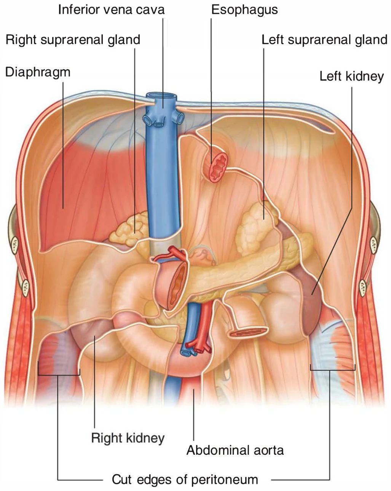
Primary and secondary retroperitoneal organs
A primary retroperitoneal organ formed behind the peritoneum and never had a mesentery. These are the great vessels and the urinary and endocrine organs: the abdominal aorta, the inferior vena cava (IVC), the kidneys, the ureters and the suprarenal glands.
A secondary retroperitoneal organ is part of the digestive tract. It began inside the peritoneal cavity on a mesentery. During development it was pushed against the back wall, and its mesentery fused with the parietal peritoneum and disappeared. These are the duodenum (2nd to 4th parts), the pancreas (except its tail), the ascending colon and the descending colon. The 1st part of the duodenum and the tail of the pancreas kept their peritoneum.
So one question sorts them: is the organ part of the digestive tract? If so, it is secondary.
The memory phrase SAD PUCKER lists the organs that lie outside the peritoneum.
| Letter | Organ | Primary or secondary |
|---|---|---|
| S | Suprarenal glands | Primary |
| A | Aorta and IVC | Primary |
| D | Duodenum, 2nd to 4th parts | Secondary |
| P | Pancreas, except its tail | Secondary |
| U | Ureters | Primary |
| C | Colon, ascending and descending | Secondary |
| K | Kidneys | Primary |
| E | Esophagus | Not on this wall: almost all of it is in the chest |
| R | Rectum | Not on this wall: its lower part is below the peritoneum in the pelvis (subperitoneal) |
1. Where is the retroperitoneal space?
2. The kidneys, the ureters and the suprarenal glands are what type of organ?
3. Which organ is secondary retroperitoneal?
4. How did the ascending colon come to lie behind the peritoneum?
5. Which two parts kept their peritoneal covering and are left out of the list of secondary retroperitoneal organs?
Vertebral level, ribs, and why the right kidney is lower
Each kidney is bean-shaped, about 10 cm long, 5 cm wide and 2.5 cm thick. In a person lying on the back, the kidneys extend from the T12 vertebra to the L3 vertebra. The right kidney is lower than the left, because the liver takes up the space above it. Two landmarks show the difference.
| Landmark | Left kidney (higher) | Right kidney (lower) |
|---|---|---|
| Transpyloric plane (the horizontal plane through L1) | Passes through the hilum, about 5 cm from the midline | Passes through the upper pole |
| Ribs behind the upper part of the kidney (the kidney lies deep to them) | Ribs 11 and 12 | Rib 12 only |
The hilum is the notch on the medial border where the vessels enter and leave Ch 2.
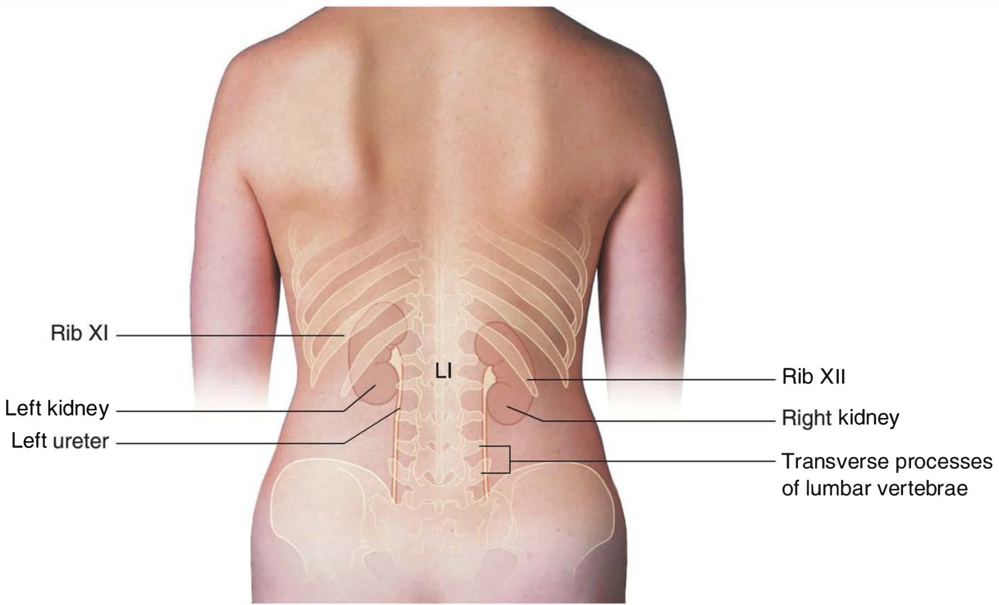
The kidneys move. They are held by fat, fascia and their vessels, not by bone. They sink about 3 cm, the height of one vertebra, when the person stands up. They move down by the same amount with each deep breath in, because the diaphragm lies directly above them and pushes them down.
The kidney is tilted. It rests on the sloping wall of the gutter, so its hilum faces forward and medially, not straight toward the midline.
1. In a person lying on the back, which vertebral levels do the kidneys span?
2. Which kidney lies lower, and why?
3. The transpyloric plane is the horizontal plane through the L1 vertebra. Which parts of the kidneys does it pass through?
4. Which ribs cross behind the upper part of the left kidney?
5. A person takes a deep breath in. What happens to the kidneys?
6. Which way does the hilum of the kidney face?
The four coverings, from the kidney outward
The kidney is packed in two layers of fat, with a sleeve of fascia between them.
| Layer (inside to outside) | What it is and where it lies |
|---|---|
| 1. Fibrous capsule (renal capsule) | A thin, tough membrane stuck directly to the surface of the kidney |
| 2. Perinephric fat (perirenal fat) | Surrounds the kidney and the suprarenal gland, inside the renal fascia. At the hilum it continues into the kidney as the fat of the renal sinus Ch 2. |
| 3. Renal fascia (Gerota's fascia) | Dense connective tissue. Its anterior and posterior layers enclose the kidney, the suprarenal gland and the perinephric fat. |
| 4. Paranephric fat (pararenal fat) | Outside the renal fascia, thickest behind the kidney |
"Peri" means around: perinephric fat is right around the kidney, inside the fascia. "Para" means beside: paranephric fat is outside it. Beyond the paranephric fat lies the transversalis fascia, which lines the inner surface of the abdominal wall muscles.
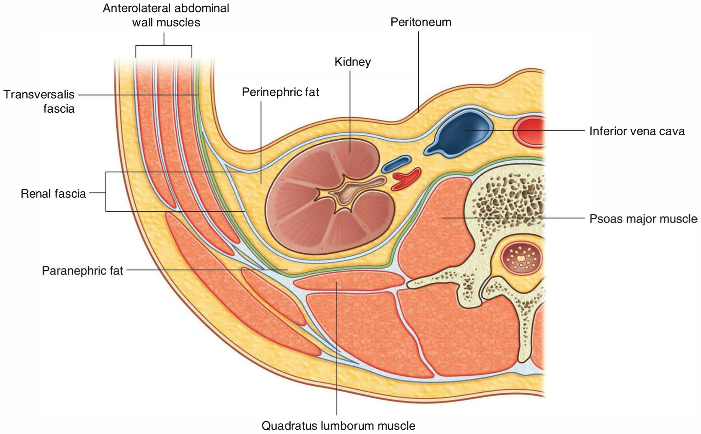
What holds the kidney in place. No ligament does. The fat cushions it, and the fat, the renal fascia, the renal vessels and the ureter together hold it in a fairly constant position.
The suprarenal gland lies inside the renal fascia as well, in the perinephric fat on the upper medial corner of the kidney. But a thin septum of the fascia passes between the two. So the gland has its own compartment and is not attached to the kidney Ch 5.
1. Going outward from the kidney, what is the order of its coverings?
2. Where is the paranephric (pararenal) fat thickest?
3. The perinephric fat continues through the hilum of the kidney. What does it become there?
4. The kidney and the suprarenal gland both lie inside the renal fascia. What separates them?
5. What holds the kidney in its position on the posterior abdominal wall?
Where the renal fascia is closed and where it is open
The two layers of the renal fascia form an envelope that is closed on three sides and open on the fourth. The open side decides where fluid around the kidney can travel, and it explains how a kidney can drop.
| Side | What the two layers do | Result |
|---|---|---|
| Above | Fuse above the suprarenal gland and blend with the fascia on the under surface of the diaphragm | Closed. The envelope hangs from the diaphragm. |
| Laterally | Fuse and continue as the transversalis fascia | Closed |
| Medially | The anterior layer passes in front of the renal vessels and blends with the connective tissue around the aorta and the IVC. The posterior layer attaches to the fascia of psoas major. | Closed. No path to the opposite kidney. |
| Below | Do not fuse. They continue downward, loosely joined, around the ureter (periureteric fascia). | Open toward the pelvis |
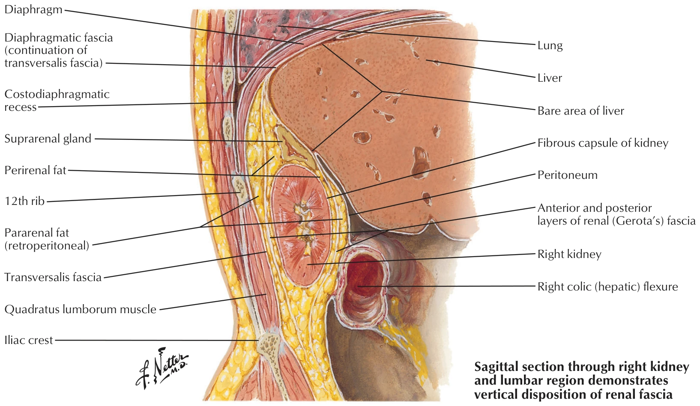
A perinephric abscess is pus in the perinephric fat, that is, between the fibrous capsule and the renal fascia. The fascia decides where the pus can go. It does not cross to the opposite kidney, because the envelope is closed medially. It can track down into the pelvis, because the layers are open below. Blood from an injured kidney spreads in the same way.
The infection either climbs the urinary tract from the bladder to the kidney, or is carried in the blood (typically Staphylococcus aureus). Diabetes mellitus and lesions that block the flow of urine, such as stones and cysts, make it more likely.
Pus under the capsule is a subcapsular abscess. Pus in the paranephric fat, outside the renal fascia, is a paranephric abscess.
Nothing closes the envelope from below. So an unusually mobile kidney can descend more than the normal 3 cm when the person stands. The suprarenal gland does not follow it down: it has its own compartment, and its fascia is fixed to the diaphragm. For the same reason a kidney can be removed for transplantation without disturbing the gland.
1. On which side do the anterior and posterior layers of the renal fascia fail to fuse?
2. A man has fever and a tender mass in the left flank. Computed tomography (CT) shows a large perinephric abscess. Where is the pus? lecture question
3. Why does a perinephric abscess not spread to the opposite kidney?
4. Blood from a torn kidney collects inside the renal fascia. Where can it track?
5. A mobile kidney drops when the patient stands (nephroptosis). Why does the suprarenal gland stay where it is?
6. Bacteria carried in the blood cause a perinephric abscess. Which organism is typical?
What lies in front of each kidney, and the hepatorenal recess
The liver is on the right, and the stomach and spleen are on the left. So the two kidneys have different neighbours in front.
| Part of the front surface | Right kidney | Left kidney |
|---|---|---|
| Upper pole, medial side | Right suprarenal gland | Left suprarenal gland |
| Upper part | Liver | Stomach and spleen |
| Middle, at the hilum | Duodenum (descending, 2nd part) | Pancreas |
| Lower part, lateral side | Right colic flexure and ascending colon | Left colic flexure and descending colon |
| Lower part, medial side | Small intestine (jejunum) | Jejunum |
The suprarenal gland, duodenum, pancreas and colon are retroperitoneal and lie directly against the kidney. The liver, stomach, spleen and jejunum are intraperitoneal, so a layer of peritoneum separates them from it.
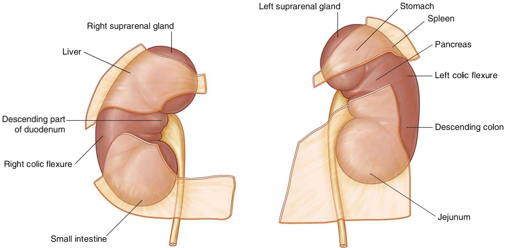
The hepatorenal recess
The hepatorenal recess (subhepatic recess, Morison's pouch) is the part of the peritoneal cavity between the liver in front and the right kidney behind. It is a potential space: its walls touch, and normally it holds no fluid.
Its position is what matters. When a person lies on the back, the recess is the lowest point of the upper part of the peritoneal cavity, and fluid runs downhill. So when the abdomen fills with fluid, for example with blood (hemoperitoneum), the fluid collects here. It also collects in the lowest pouch of the pelvis, between the rectum and the bladder or uterus. Fluid in the recess shows on ultrasound or CT as a stripe between the liver and the right kidney.
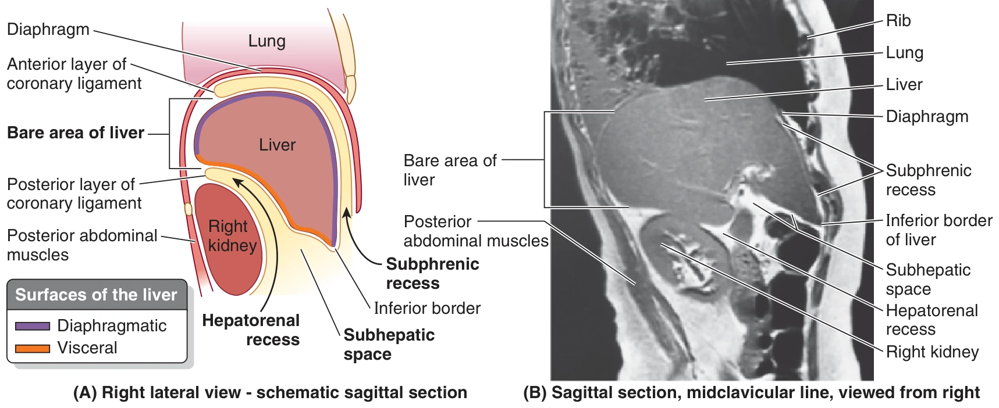
1. Which structure lies directly in front of the hilum of the right kidney?
2. Which organ crosses the middle of the front surface of the left kidney, at its hilum?
3. A tumor grows forward from the lower lateral part of the left kidney. Which organ does it reach first?
4. The hepatorenal recess separates which two structures?
5. A patient lying on the back bleeds into the abdomen. Why does blood collect in the hepatorenal recess?
6. In a man lying on his back, free fluid collects in the hepatorenal recess and in which other place?
What lies behind each kidney
Behind, both kidneys rest on the same structures. Only the height differs.
Upper part: the diaphragm. Behind the diaphragm come the pleura and then the ribs (rib 12 on the right, ribs 11 and 12 on the left). The lowest pocket of the pleura, the costodiaphragmatic recess, reaches down to the 12th rib at the back. So the pleural cavity overlaps the upper part of the kidney, with only the diaphragm between them.
Lower part: three muscles Ch 6. From medial to lateral they are psoas major, quadratus lumborum and transversus abdominis.
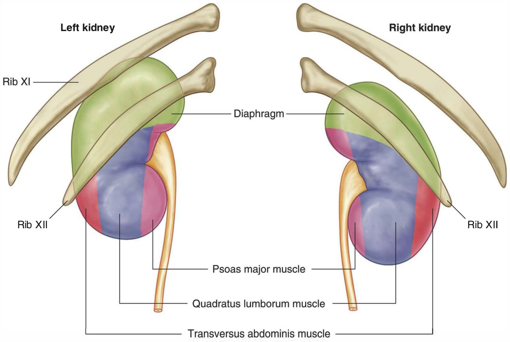
Three nerves cross behind the kidney Ch 8. They run downward and laterally, between the kidney and the muscles: the subcostal nerve (T12, with the subcostal vessels), the iliohypogastric nerve (L1) and the ilioinguinal nerve (L1).
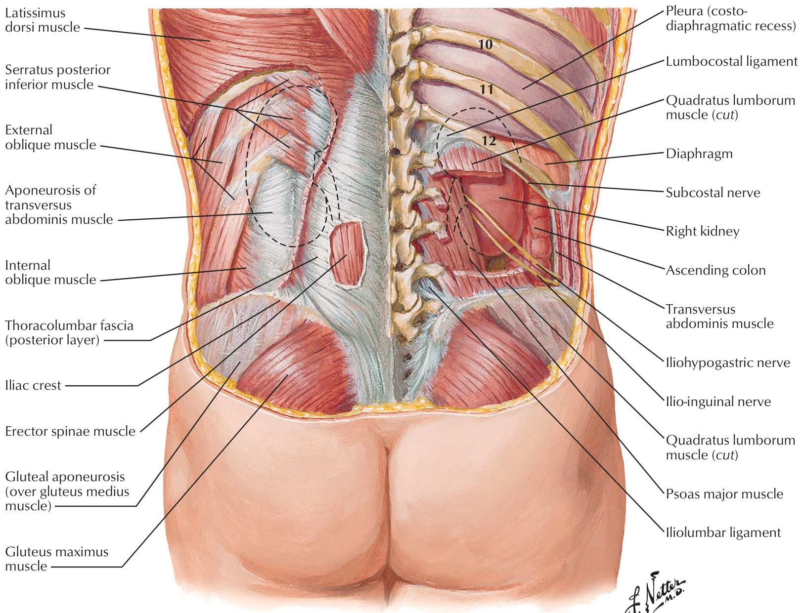
Reaching the kidney from the back. Because the kidney is retroperitoneal, a surgeon can reach it through the back without opening the peritoneal cavity. The renal fascia must always be opened, and the three nerves must be protected.
A knife enters the back just above the 12th rib, lateral to the back muscles. It passes through the pleura, then the diaphragm, then the kidney. So the patient has blood in the urine (hematuria), which points to the kidney, and an opened pleural cavity. The aorta and the IVC are spared, because they lie near the midline, medial to the wound.
The kidney lies directly on psoas major, the muscle that flexes the hip. When the tissue around the kidney is inflamed, extending the hip stretches psoas major across the inflamed area, so the pain increases.
1. What separates the upper part of the kidney from the pleural cavity?
2. A knife enters the right side of the back just above the 12th rib, lateral to the back muscles. The patient has blood in the urine. Which pair of structures is most likely injured? lecture question
3. Below the diaphragm, which muscles lie behind the kidney, from medial to lateral?
4. A surgeon reaches the kidney from the back. Which nerves cross the posterior surface of the kidney and must be protected?
5. Why can a surgeon operate on the kidney through the back without opening the peritoneal cavity?
6. A patient has inflammation around the kidney. Why does extending the hip make the pain worse?
How the kidney reaches its place, and two ways it goes wrong
The kidneys do not form where they end up. Both begin in the pelvis, close together, and come to lie higher on the back wall as the body grows. This is the ascent of the kidneys. On the way up each kidney takes its blood from the nearest part of the aorta: higher arteries form, and the lower ones disappear Ch 3.
Horseshoe kidney
In about 1 in 600 fetuses the lower poles of the two kidneys fuse while they are still close together in the pelvis. The result is one U-shaped kidney with a bridge across the midline. As the U rises, its bridge catches under the inferior mesenteric artery (IMA), which leaves the front of the aorta at L3. The kidney can go no higher, so it stays at L3 to L5. It usually works normally and often causes no symptoms.
Pelvic kidney
A pelvic (ectopic) kidney never ascended out of the pelvis. It can be on one side or both.
- Lies
- In front of the sacrum
- Renal artery comes from
- The bifurcation of the aorta or a common iliac artery (a low source kept from the embryo)
- Can be mistaken for
- A pelvic tumor
- Can be injured
- During pregnancy or childbirth
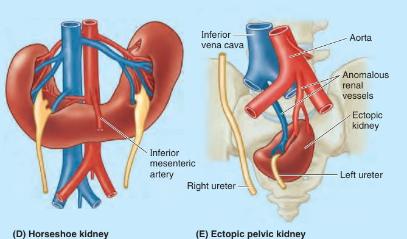
1. Where do the kidneys begin in the embryo?
2. Which parts of the two kidneys fuse to form a horseshoe kidney?
3. A horseshoe kidney stays low in the abdomen. Which structure stopped its ascent? lecture question
4. At which vertebral level does a horseshoe kidney usually lie?
5. A kidney lies in the pelvis, in front of the sacrum. Where does its renal artery usually arise?
6. A mass is found in a woman's pelvis, in front of the sacrum. Which condition must be ruled out before it is removed as a tumor?
Inside the kidney
Cut a kidney open from pole to pole and it shows a simple plan. An outer zone filters the blood, cone-shaped pyramids carry the urine inward, and a set of cups and a funnel in the hollow centre collect it and lead it to the ureter.
The hilum, the renal sinus and the renal pelvis
The kidney has an anterior and a posterior surface, a superior and an inferior pole, a convex lateral border and a concave medial border, which gives it the shape of a bean. Three structures meet at the medial border.
| Name | What it is |
|---|---|
| Hilum | The doorway. The vertical slit in the medial border. Everything that enters or leaves the kidney passes through it. |
| Renal sinus | The room behind the door. The space inside the kidney that the hilum opens into. It holds the renal pelvis, the calyces, vessels, nerves and fat. The fat is the perinephric fat, which continues in through the hilum Ch 1. |
| Renal pelvis | A funnel standing in the room. The flattened, funnel-shaped upper end of the ureter. It collects the urine from the calyces and narrows into the ureter. |
What passes through the hilum, and in what order
The renal artery enters the kidney. The renal vein and the renal pelvis leave it. Small nerves and lymph vessels pass through as well. From front to back, the three large structures lie in a fixed order:
renal vein (most anterior) → renal artery → renal pelvis (most posterior): V-A-P.
The vein is in front because the renal veins run in front of the renal arteries all the way from the great vessels Ch 3. The renal pelvis lies behind both and turns downward to become the ureter. So a surgeon who comes to the hilum from the front meets the renal vein first.
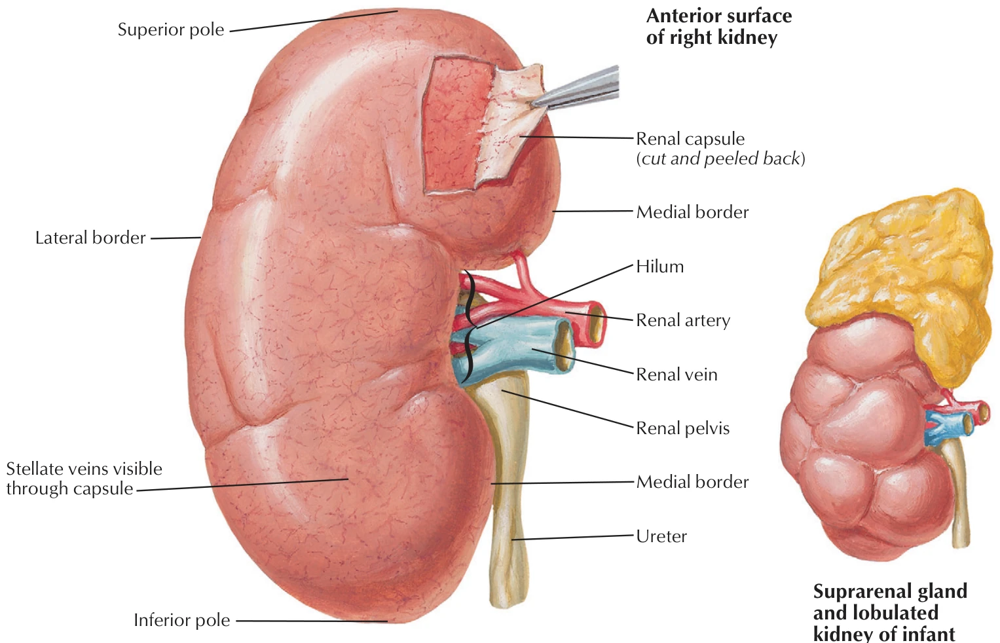
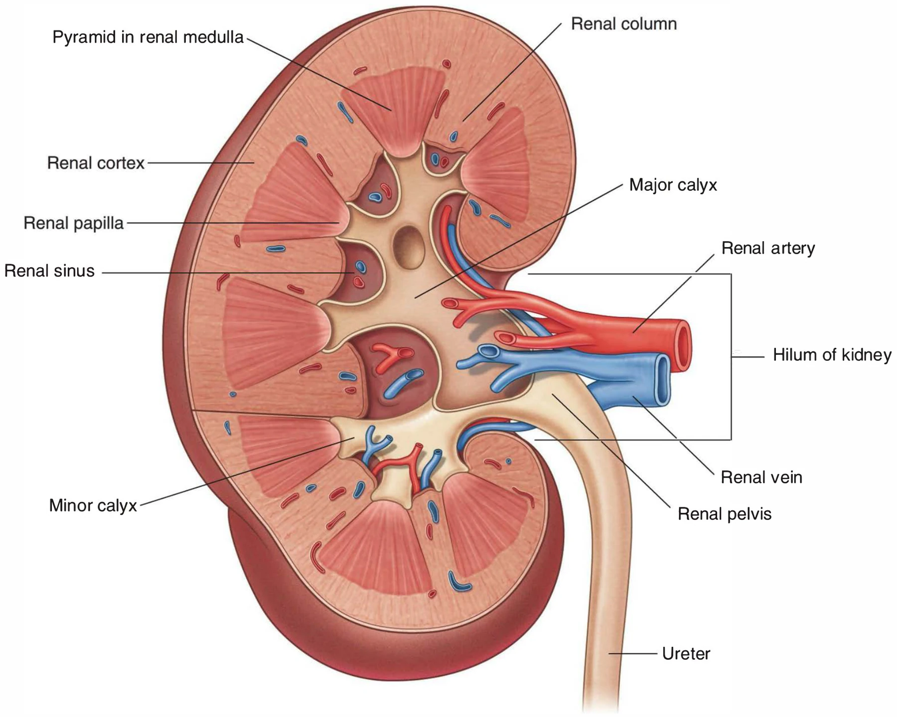
1. Into which space does the hilum of the kidney open?
2. What does the renal sinus contain?
3. What is the renal pelvis?
4. Which large structure enters the kidney at the hilum, while the other two leave it?
5. A surgeon approaches the left renal hilum from the front. In what order, from anterior to posterior, do the structures lie? lecture question
Cortex, columns, pyramids and lobes
The renal cortex is the outer zone, under the capsule. It is paler and looks granular. Tongues of cortex also dip inward between the pyramids, as far as the renal sinus. These are the renal columns (columns of Bertin). A renal column is cortex, even though it lies deep in the kidney.
The renal medulla is the inner zone, deep to the cortex. It is darker, reddish brown, and looks striped. The renal columns divide it into 10 to 18 cone-shaped renal pyramids. Each pyramid has its wide base toward the cortex and its tip, the renal papilla, pointing inward into the renal sinus.
A renal lobe is one pyramid together with the cortex that belongs to it: the cap of cortex over its base and the renal column on each side. In a fetus and an infant the lobes show as bumps on the surface of the kidney. In an adult the surface is smooth.
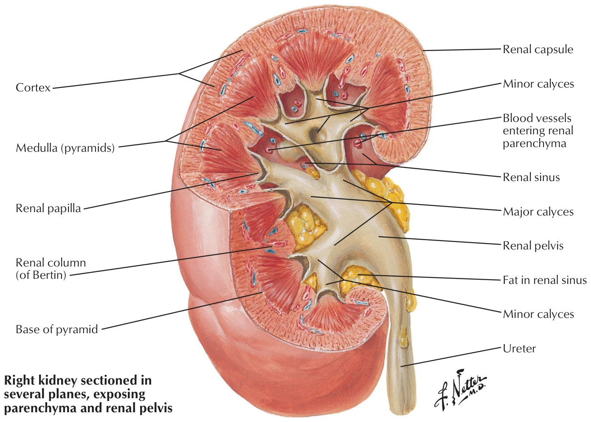
1. On a cut kidney, how does the medulla look compared with the cortex?
2. What are the renal columns?
3. Which way does a renal pyramid point?
4. What makes up one renal lobe?
5. The kidney of a newborn has bumps on its surface. What does each bump represent?
Nephrons: what the cortex and the medulla contain
The work of the kidney is done by nephrons, microscopic filters with a long tube attached. Each kidney has more than 1 million. They filter the blood and excrete wastes (mainly products of protein breakdown), and they remove excess water and salts, which keeps the body's fluid, electrolytes and acid–base balance steady. The kidney also releases renin, which raises blood pressure, and erythropoietin, which tells the bone marrow to make red blood cells.
A nephron begins with a renal corpuscle: a tuft of capillaries, the glomerulus, in a cup called Bowman's capsule. Blood is filtered here. The filtered fluid then runs through the proximal convoluted tubule (convoluted means coiled), the hairpin loop of Henle and the distal convoluted tubule, which empties into a collecting duct.
One rule tells you where each part lies: the filters and the coiled parts are in the cortex, and the straight parts are in the medulla.
- Cortex
- Renal corpuscles (glomeruli), proximal and distal convoluted tubules, and the first part of each collecting duct
- Medulla
- Loops of Henle, with their thin limbs and thick limbs (the thick limbs are the straight parts of the proximal and distal tubules), and the last part of each collecting duct, which runs down the pyramid to the papilla
This is why the cortex looks granular (round corpuscles and coiled tubules) and the pyramids look striped (straight tubes running side by side toward the papilla).
Nephrons come in two kinds. A cortical nephron has its corpuscle high in the cortex and a short loop. A juxtamedullary nephron ("next to the medulla") has its corpuscle beside the medulla and a long loop that reaches deep into the pyramid. The macula densa is the patch of distal tubule that comes back to touch its own corpuscle.
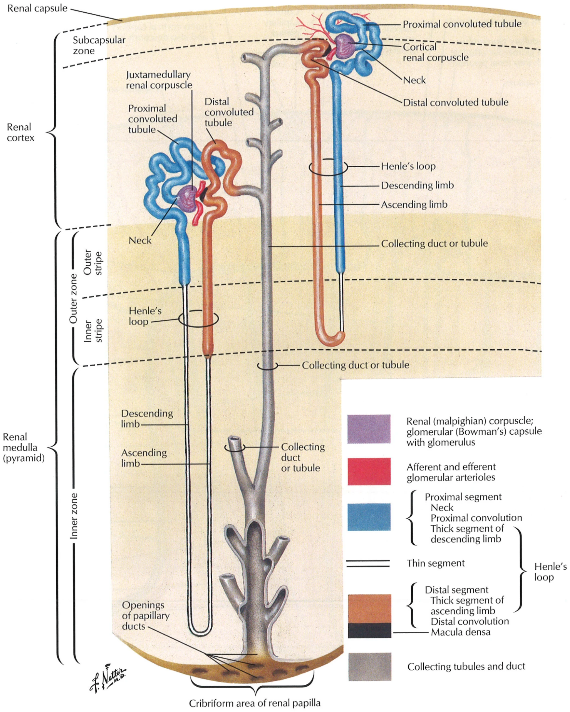
1. About how many nephrons does each kidney have?
2. Which hormone released by the kidney tells the bone marrow to make red blood cells?
3. After Bowman's capsule, in what order does the filtered fluid pass through the nephron?
4. Which structures lie in the renal cortex?
5. Why do the renal pyramids look striped?
6. Which nephrons have long loops of Henle that reach deep into the medulla?
Calyces and the path of urine
The collecting ducts open as tiny holes on the tip of each pyramid, the renal papilla. From there the urine only has to be collected and carried away.
A minor calyx (plural calyces, also spelled calices) is a small cup that fits over one papilla and catches the urine. Two or three minor calyces join to form a major calyx. Two or three major calyces join to form the renal pelvis, which narrows into the ureter. So the path of urine is one straight route:
collecting duct → renal papilla → minor calyx → major calyx → renal pelvis → ureter → urinary bladder → urethra → outside.
Before the collecting duct comes the nephron itself: glomerulus, proximal tubule, loop of Henle, distal tubule.
Each part empties only into the next. A stone lodged in a minor calyx therefore stops urine from passing directly into the major calyx. A block further down, such as a stone in the ureter, makes urine back up and stretch the renal pelvis and the calyces Ch 4.
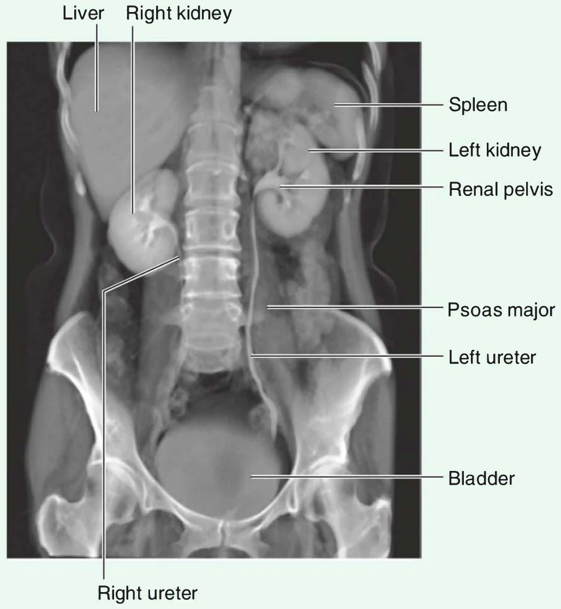
1. Where do the collecting ducts open?
2. What does each minor calyx fit over?
3. A kidney stone is lodged in a minor calyx. Into which structure does it stop urine from passing directly? lecture question
4. How many major calyces usually join to form the renal pelvis?
5. A stone blocks the ureter and urine backs up. Which structures are stretched first?
Blood vessels, lymph and nerves of the kidney
Each kidney gets one large artery straight from the aorta and returns its blood through one large vein to the inferior vena cava (IVC). The aorta lies a little left of the midline and the IVC a little right of it, so the vessels of the two kidneys are not mirror images. Most clinical facts here follow from that.
The renal arteries: from the aorta to the hilum
The two renal arteries leave the sides of the abdominal aorta at the L1–L2 disc, just below the superior mesenteric artery (SMA), which leaves the front of the aorta at L1. Each runs sideways to the hilum of its kidney Ch 2.
The aorta lies just left of the midline, so it is close to the left kidney and farther from the right one. The right renal artery is therefore the longer one, and to reach its kidney it must pass behind (posterior to) the IVC. The left renal artery is short and has no great vessel in its way.
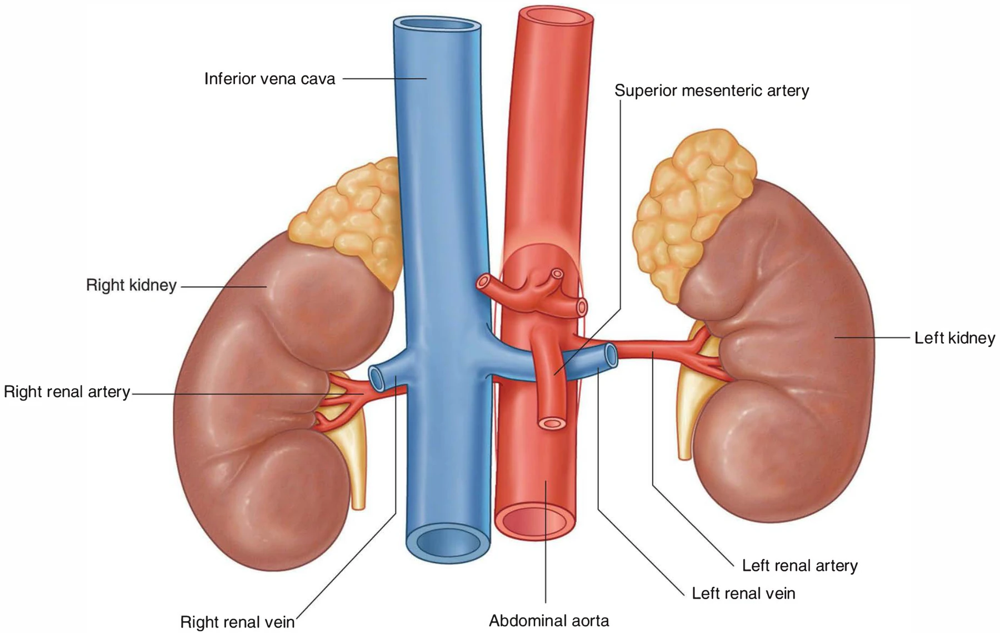
- In front of it at the hilum
- The renal vein
- Behind it at the hilum
- The renal pelvis
- Small branches on the way
- The inferior suprarenal artery, up to the suprarenal gland Ch 5, and a branch to the top of the ureter Ch 4
1. At what level do the renal arteries leave the aorta, and where is that in relation to the SMA?
2. Why is the right renal artery longer than the left?
3. A surgeon lifts the IVC forward off the posterior abdominal wall at the level of L1–L2. Which artery is found crossing behind it?
Five segmental arteries, each the only supply of its segment
Close to the hilum each renal artery splits into an anterior branch and a posterior branch (also called divisions). These give five segmental arteries, and each supplies its own block of kidney, a renal segment.
| Branch of the renal artery | Segmental arteries that come from it |
|---|---|
| Anterior branch | Four: superior (apical), anterior superior, anterior inferior, inferior |
| Posterior branch | One: posterior |
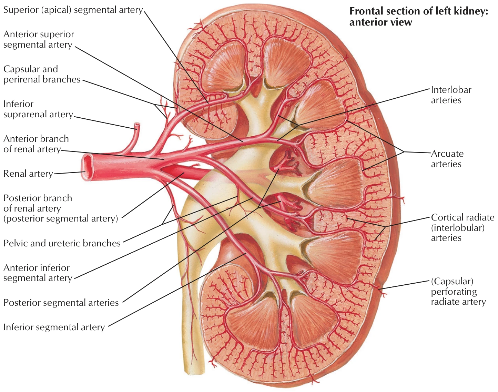
The superior and inferior segments cap the poles, so they show on both surfaces of the kidney. The two anterior segments lie on the front, and the posterior segment on the back.
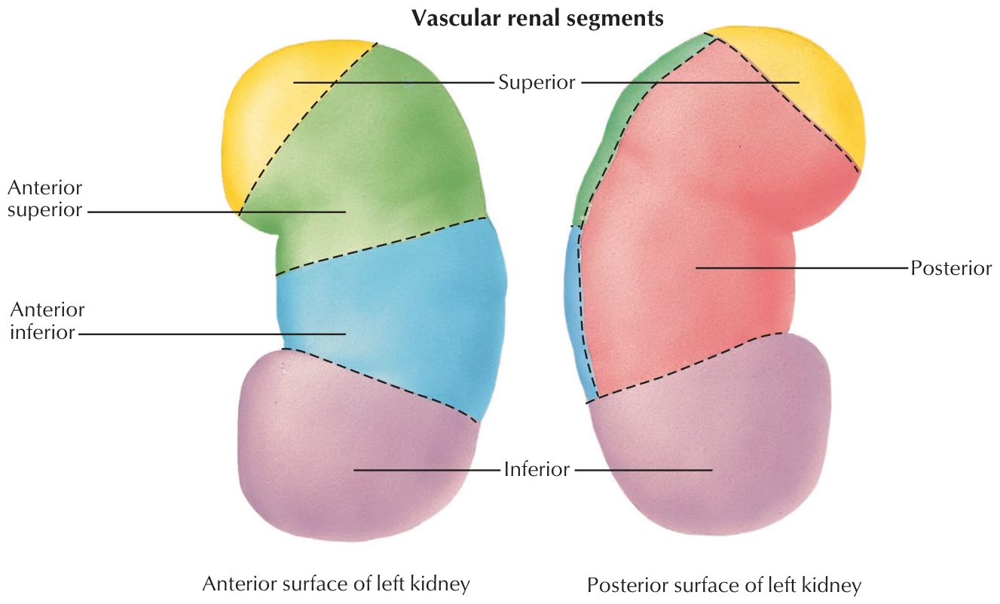
Segmental arteries are end arteries: each is the only supply of its segment, with no connections (anastomoses) to its neighbors. So if one is blocked, its segment stops working and dies, because no blood can come across from the segments beside it. For the same reason a surgeon can tie one segmental artery and remove only its segment, for example one that holds a tumor, while the other four keep their full supply. The veins inside the kidney are different: they connect freely with one another.
1. How are the five segmental arteries of a kidney shared between the two branches of the renal artery?
2. A clot blocks one segmental artery of a kidney. Why does the whole segment die?
3. A tumor lies entirely inside the posterior segment of a kidney. Which vessel is tied to remove that segment and nothing else?
4. Which renal segments show on both the anterior and the posterior surface of the kidney?
5. How do the veins inside the kidney differ from the segmental arteries?
From the segmental artery to the glomerulus, and out again
Inside the kidney the arteries keep dividing until they reach the glomeruli, the tufts of capillaries in the cortex where blood is filtered. The veins run the same route in reverse.
- Arteries
- renal → segmental → lobar → interlobar → arcuate → interlobular → afferent arteriole
- Capillaries
- glomerulus → efferent arteriole → peritubular capillaries
- Veins
- interlobular → arcuate → interlobar → renal vein → IVC
| Vessel | Where it runs |
|---|---|
| Lobar artery | In the fat of the renal sinus, one for each pyramid (a pyramid with its cortex is a lobe). It is short, so lists often skip it and go from segmental straight to interlobar. |
| Interlobar artery | Between two pyramids, inside a renal column, outward toward the cortex |
| Arcuate artery | Arches over the base of a pyramid, along the border of cortex and medulla |
| Interlobular artery (cortical radiate artery) | Straight outward through the cortex toward the capsule |
| Afferent arteriole | A short side branch, usually of an interlobular artery, into one glomerulus. A few come straight from an arcuate or interlobar artery. |
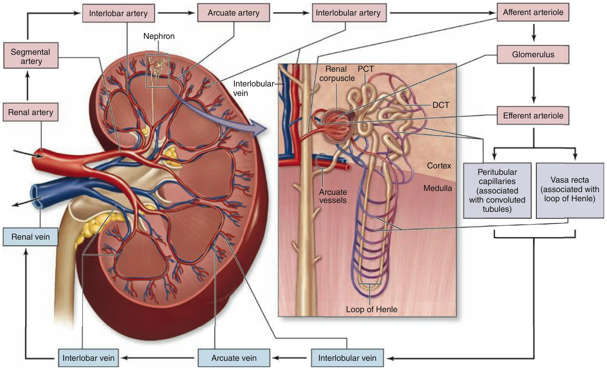
Blood here passes through two sets of capillaries in a row. It is filtered in the glomerulus, leaves through the efferent arteriole, and only then enters the peritubular capillaries around the tubules, where the water and salts that the tubules reabsorb pass back into the blood.
More than 90% of the blood that enters the kidney flows through the cortex, because all the glomeruli are there.
Blood flows one way down this tree, so tying or blocking a vessel cuts off everything after it and nothing before it.
1. While removing part of a kidney, a surgeon ties one interlobar artery. Which vessel loses its direct arterial flow? lecture question
2. Which arteries run inside the renal columns, between two pyramids?
3. Where do the arcuate arteries run?
4. Blood has just left a glomerulus through the efferent arteriole. Where does it go next?
5. More than 90% of the blood that enters the kidney flows through the cortex. Why?
Accessory renal arteries
About 30% of people have an extra artery to a kidney, an accessory renal artery. It is left over from development. As the kidney climbs from the pelvis to its final place Ch 1, it is supplied by a series of arteries from the aorta, each higher than the last, and the lower ones normally wither away. One that stays is an accessory renal artery.
It comes from the aorta, above or below the main renal artery. It enters at the hilum or directly at one of the poles, where it is called a polar artery.
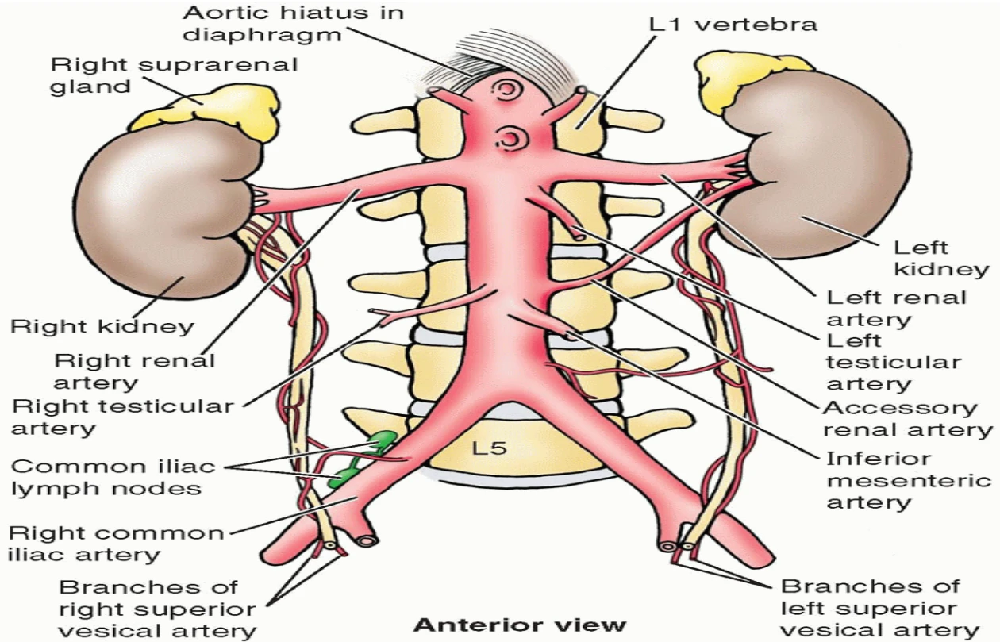
- It is an end artery, like a segmental artery. If it is cut or tied in an operation, the part of the kidney it supplied dies.
- One that runs to the lower pole crosses in front of the ureter. It can press on the ureter and block the flow of urine Ch 4.
1. Why do about 30% of people have an accessory renal artery?
2. During an operation a small accessory renal artery is tied. What happens to the part of the kidney it supplied?
3. An accessory renal artery runs to the lower pole of the kidney. Which structure can it press on and block?
The renal veins, and what drains into the left one
Each renal vein forms at the hilum from several veins inside the kidney, lies in front of the renal artery and drains into the IVC. The IVC lies to the right of the midline, so here the asymmetry is the reverse of the arteries.
| Right renal vein | Left renal vein | |
|---|---|---|
| Length | Short | Long |
| Course | Straight into the IVC | Crosses the midline in front of the aorta and behind the SMA, then enters the IVC |
| Veins that drain into it | None | The left suprarenal, left gonadal and left inferior phrenic veins |
Why the left renal vein lies in a gap. It crosses the aorta just below the origin of the SMA, which turns downward at once and hangs in front of the vein. So the vein has the SMA in front of it and the aorta behind it. The third part of the duodenum crosses the same gap just below it.
Why three veins end in the left renal vein. On the right, the suprarenal, gonadal (testicular or ovarian) and inferior phrenic veins lie beside the IVC and drain straight into it. On the left, the aorta lies between them and the IVC, so they join the one vein that already crosses the aorta. The left suprarenal vein enters the left renal vein from above, usually after the left inferior phrenic vein has joined it. The left gonadal vein enters from below. The rule holds for veins only: both gonadal arteries come straight from the aorta Ch 7.
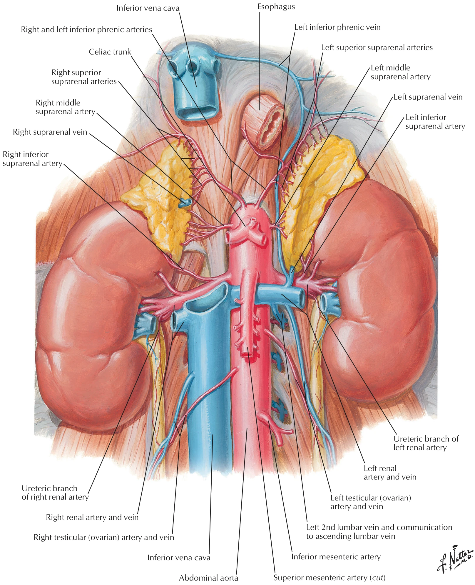
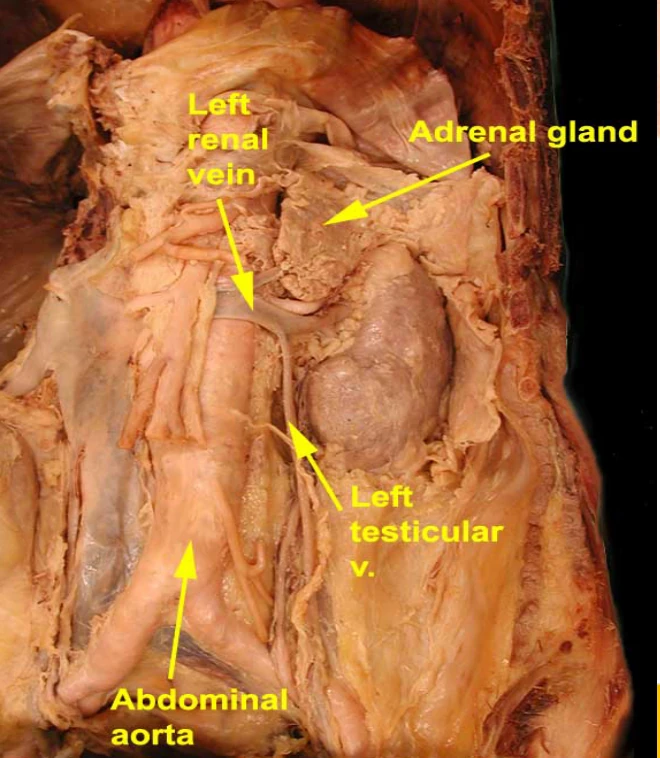
Surgeons usually take the left kidney from a living donor, because its renal vein is the long one, and a long vein is easier to join to the recipient's vessels.
1. Why do surgeons usually take the left kidney from a living donor?
2. Why do the left suprarenal and left gonadal veins end in the left renal vein and not in the IVC?
3. A clot blocks the right renal vein where it joins the IVC. Which venous drainage is affected?
4. Which vein usually joins the left suprarenal vein just before it enters the left renal vein?
When the left renal vein is squeezed or blocked
A pad of fat around the root of the SMA normally holds the angle between the SMA and the aorta open. If the angle closes, the SMA presses the left renal vein against the aorta, as the arms of a nutcracker close on a nut. This is nutcracker syndrome, also called renal vein entrapment syndrome. The usual causes are loss of the fat pad, as after fast and heavy weight loss, and a downward pull on the SMA.
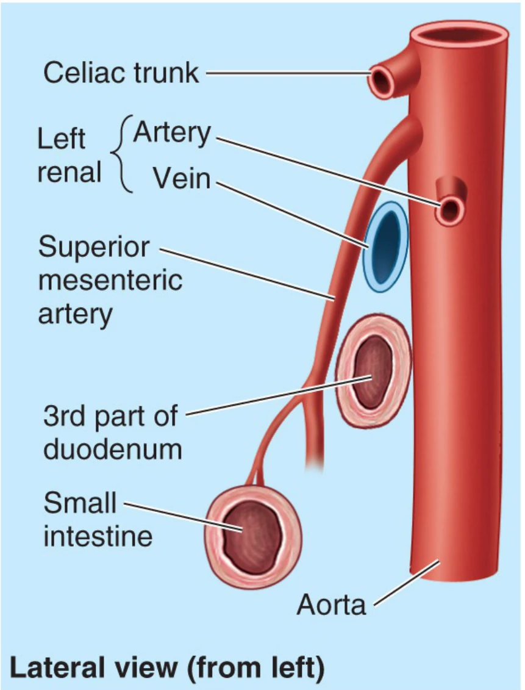
Pressure then rises in every vein that drains into the left renal vein, and each finding follows from that.
| Finding | Why |
|---|---|
| Blood in the urine (hematuria) | The thin-walled veins of the left kidney swell and leak blood into the urine. Over time the patient can become anemic. |
| Protein in the urine (proteinuria) | The same back-pressure lets protein leak into the urine. |
| Left flank pain | The left kidney is swollen with blood that cannot leave it. |
| Left testicular pain, left varicocele (swollen veins around the testis) | The left testicular vein drains into the left renal vein, so its blood backs up too. |
| Left lower quadrant pain in a woman | The left ovarian vein drains into the left renal vein and backs up in the same way. |
| Nausea and vomiting | The third part of the duodenum lies in the same angle and is squeezed too. |
The findings are on the left only. The right testicular or ovarian vein ends in the IVC itself, so nothing in a renal vein can back it up.
A tumor that plugs the left renal vein near the IVC has the same effect. Blood backs up in everything that drains into the vein: the left kidney, the left suprarenal gland and the left ovary or testis (in a man, a left varicocele). The spleen and the colon are spared, because their veins drain to the liver through the portal vein.
1. After fast, heavy weight loss a man has left flank pain and blood in his urine. Imaging shows loss of a fat pad and compression of a vessel that crosses the midline. Which vessel is compressed, and between what? lecture question
2. A tumor blocks the left renal vein near its junction with the IVC. Venous drainage of which structures is affected? lecture question
3. In nutcracker syndrome, where does the blood in the urine come from?
4. In nutcracker syndrome, what causes the nausea and vomiting?
Lymph of the kidney
The kidney's lymph vessels leave at the hilum, follow the renal vein toward the midline and end in the lumbar lymph nodes, which lie along the IVC and the aorta. The nodes beside the IVC are the caval nodes and receive the right kidney. Those beside the aorta are the aortic nodes and receive the left kidney. The suprarenal gland and the top of the ureter drain to the same nodes.
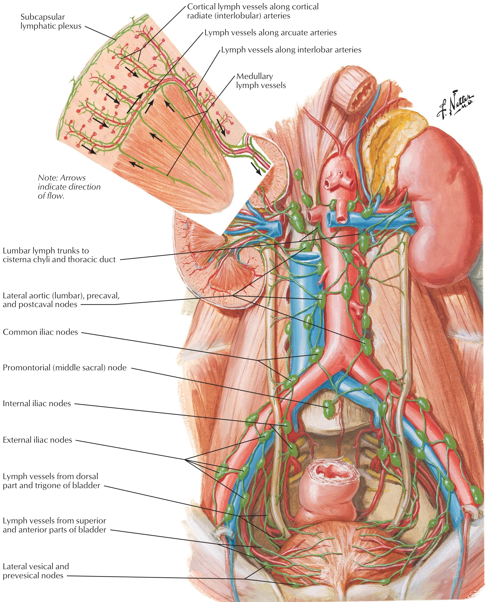
From the lumbar nodes the lymph rises in the lumbar lymph trunks to the cisterna chyli, where the thoracic duct begins Ch 7. Cancer cells from a kidney tumor take the same route, so they reach the lumbar nodes first.
1. Which vessel do the kidney's lymph vessels follow from the hilum to their lymph nodes?
2. Lymph from the kidney drains first to which nodes?
3. Lymph from the right kidney reaches which group of lumbar nodes?
4. Where does lymph from the kidney go after it has passed through the lumbar nodes?
Nerves of the kidney: the renal plexus
The kidney's nerves reach it as the renal plexus, a net of autonomic fibers wrapped around the renal artery. The plexus follows the artery into the kidney and also supplies the top of the ureter. It carries sympathetic, parasympathetic and pain fibers.
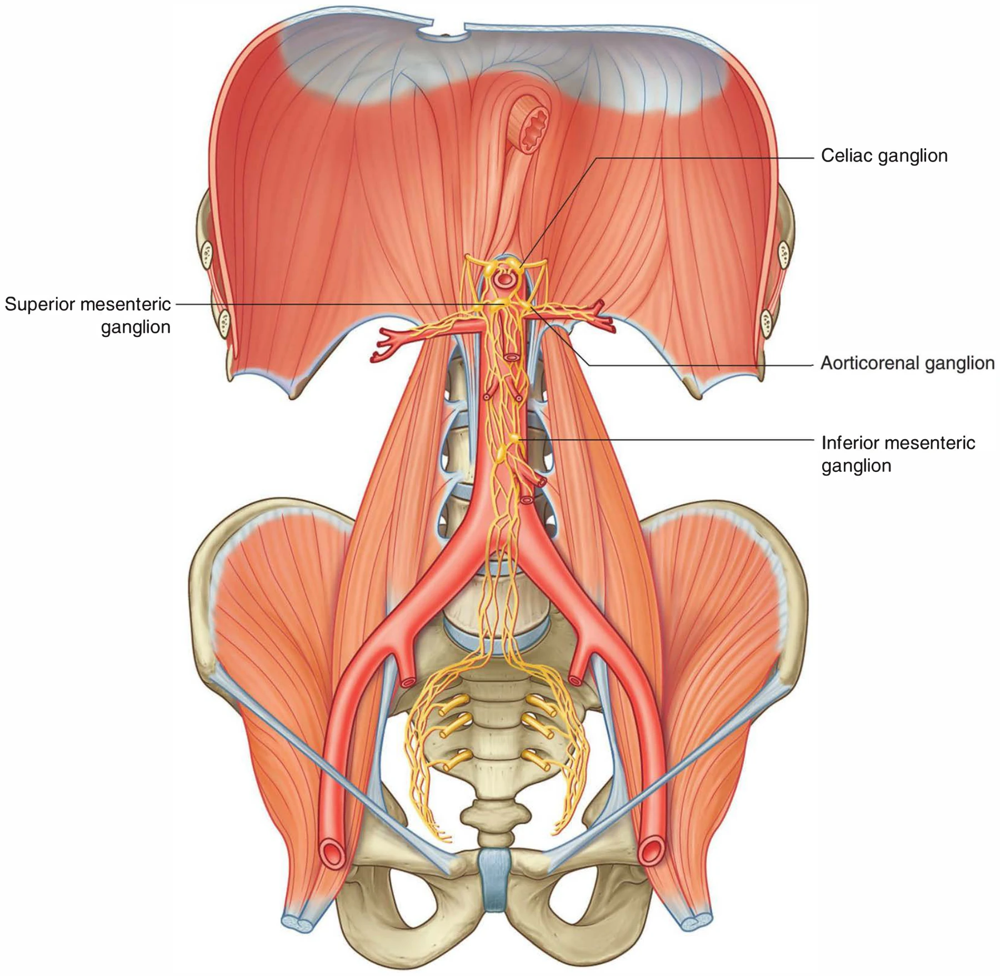
Sympathetic fibers
- The first nerve cells lie in spinal cord segments T10 to L1.
- Their fibers pass through the sympathetic trunk without synapsing and run on toward the aorta as splanchnic nerves (nerves to the organs): the lesser splanchnic nerve (T10–T11) and the least splanchnic nerve (T12), which carries most of them.
- They synapse in the aorticorenal ganglion, on the front of the aorta at the root of the renal artery.
- The second cells' fibers follow the renal artery as the renal plexus, joined by fibers from the celiac plexus above and the aortic plexus below.
In the kidney they end on the afferent and efferent arterioles and narrow them, so less blood flows through the kidney.
Parasympathetic fibers
These come from the vagus nerve (cranial nerve X) and reach the kidney through the celiac and renal plexuses.
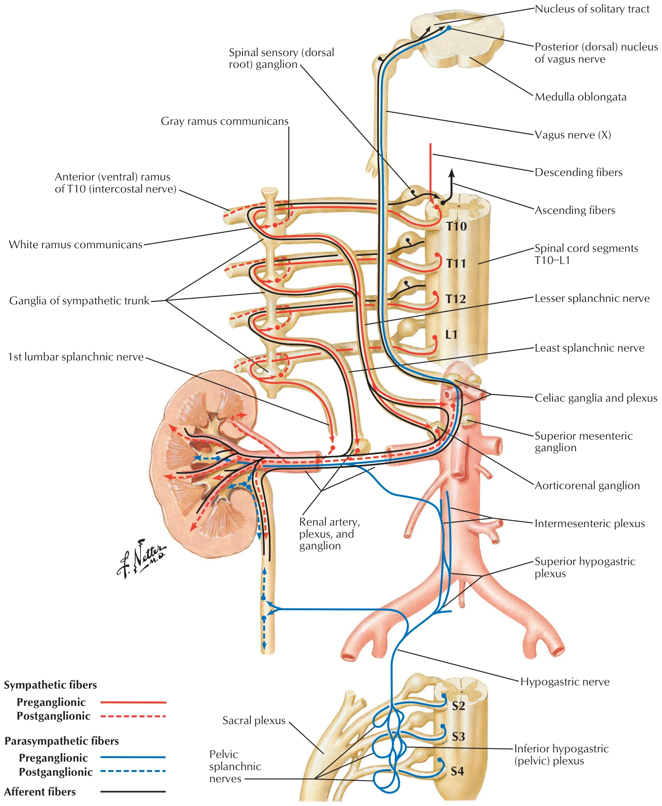
1. Along which structure does the renal plexus travel into the kidney?
2. Which nerve carries the largest share of the sympathetic fibers to the kidney?
3. Where do the sympathetic fibers to the kidney synapse?
4. What do the sympathetic fibers do inside the kidney?
5. Which nerve gives the kidney its parasympathetic fibers?
Where kidney pain is felt, and why
Pain from the kidney is carried by visceral afferent fibers, sensory fibers from an organ. What sets them off is stretch: of the renal pelvis when a stone blocks the outflow of urine, or of the capsule when the kidney swells.
These fibers have no route of their own. They run backward along the sympathetic route: renal plexus, splanchnic nerves, sympathetic trunk, and into the spinal cord at T10 to L1. The fibers that run with the parasympathetic nerves do not carry this pain.
The brain cannot tell that the signals started in an organ, so it places the pain in the skin supplied by the same cord segments. This is referred pain. For T10–L1 that skin is the flank (between the lowest rib and the hip bone) and the lower back on the same side.
The ureter's pain fibers enter a little lower, at T11–L2, which is why the pain of a stone moves from the flank toward the groin as the stone descends Ch 4.
1. What sets off the pain fibers of the kidney?
2. A stone blocks the outflow of urine and stretches the renal pelvis. By which route do the pain signals reach the spinal cord?
3. Where is pain from the kidney usually felt?
4. Why is pain from the kidney felt in the skin of the flank and not deep in the kidney itself?
The ureters
Each ureter is a narrow muscular tube that carries urine from the renal pelvis down to the bladder, behind the peritoneum all the way. What matters is what it lies on, what crosses it, and where it is narrowest.
A muscular tube behind the peritoneum: the course in the abdomen
A ureter is 25 to 30 cm long, with a thick muscular wall and a channel (lumen) only about 3 mm wide. Urine does not just run down it. Waves of contraction (peristalsis) squeeze it along, so it reaches the bladder even when you lie flat.
The ureter begins at the ureteropelvic junction, just below the hilum of the kidney, where the funnel-shaped renal pelvis Ch 2 narrows into the tube. Its upper half lies in the abdomen and its lower half in the pelvis. It is retroperitoneal throughout Ch 1: behind the peritoneum and stuck to the back of it.
- Lies on
- The front of psoas major Ch 6. So psoas major is behind it, with the genitofemoral nerve on the muscle.
- Crossed in front by
- The gonadal vessels (testicular or ovarian artery and vein) and the arteries to the colon.
- Beside it
- Right ureter: just lateral to the inferior vena cava (IVC). Left ureter: lateral to the aorta.
- Line on the back
- From 5 cm lateral to the spinous process of L1 down to the posterior superior iliac spine (PSIS).
Why the gonadal vessels cross it. They start near the midline and run downward and laterally toward the side of the pelvis, while the ureter runs straight down. So they cross in front of the ureter, and below the crossing the ureter lies medial to them, as it does at the pelvic brim.
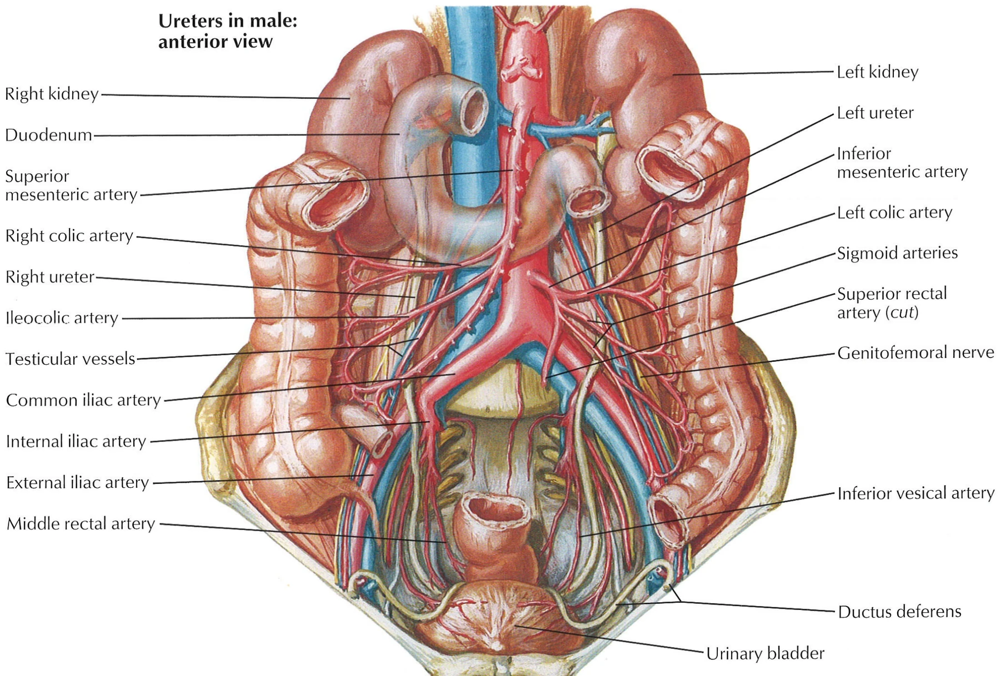
1. Why does urine reach the bladder even when a person is lying flat?
2. Where does the ureter begin?
3. Which muscle lies directly behind the abdominal part of the ureter?
4. On the back, the ureter follows a line that starts 5 cm lateral to the L1 spinous process. At which landmark does the line end?
5. As the ureter runs down on psoas major, how does it relate to the gonadal vessels?
The course in the pelvis: over the iliac vessels, then under a bridge
The ureter enters the pelvis by crossing the pelvic brim Ch 9 in front of the iliac vessels, where the common iliac artery divides. So it lies on the end of the common iliac artery or the start of the external iliac artery. The urine has to climb over this ridge before it drops into the pelvis: "water over the dam".
It then runs down the lateral wall of the pelvis, in front of the internal iliac artery and still behind the peritoneum. At about the level of the ischial spine it turns forward and medially to reach the back of the bladder.
On this last stretch one structure crosses over the top of it. The urine is the water and that structure is the bridge: "water under the bridge".
| In women | In men | |
|---|---|---|
| The bridge | The uterine artery, running from the internal iliac artery Ch 11 medially to the cervix | The ductus deferens (vas deferens), running from the deep inguinal ring along the side wall, then medially to the back of the bladder |
| Where they cross | Beside the cervix, next to the upper end of the vagina, about 2 cm above the ischial spine | At the back of the bladder, just before the ureter enters its wall |
| Which is on top | The artery is above. The ureter passes under it. | The ductus is above, between the ureter and the peritoneum. The ureter passes under it. |
The reason is the same in both sexes. The bridge runs from the side wall toward the midline, and the ureter runs from back to front, so the two must cross.
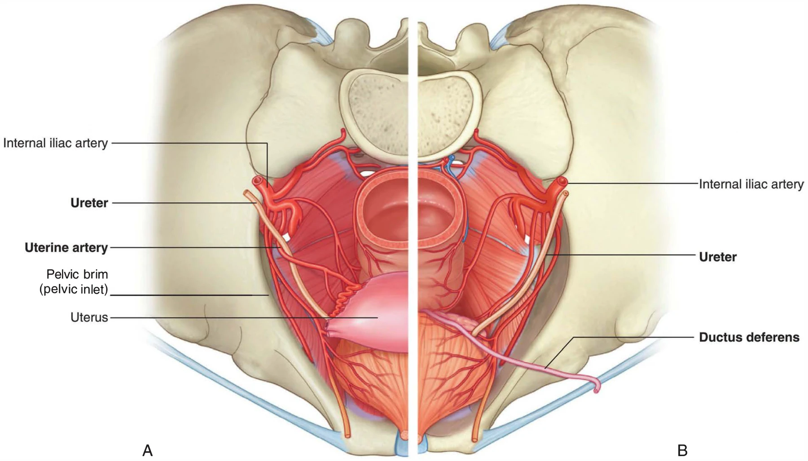
At hysterectomy (removal of the uterus) the uterine artery is clamped, tied and cut beside the cervix, exactly where the ureter passes under it. A clamp that takes in too much tissue crushes, ties or cuts the ureter as well.
When an ovary is removed, the ovarian vessels are tied at the pelvic brim, where they lie right beside the ureter. It can be caught in the same tie.
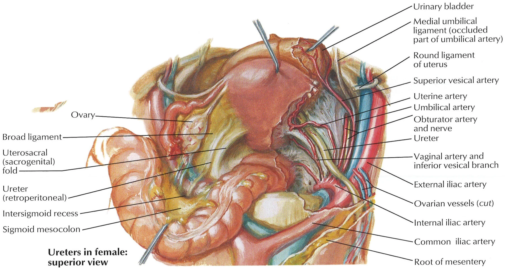
1. Where does the ureter cross the pelvic brim to enter the pelvis?
2. In a man, which structure crosses over the ureter just before the ureter enters the bladder?
3. During a hysterectomy (removal of the uterus), where is the ureter most at risk of being clamped or cut?
4. When an ovary is removed, the ovarian vessels are tied at the pelvic brim. Why is the ureter at risk there?
5. Why do the uterine artery in women and the ductus deferens in men both have to cross the ureter?
Three narrow places, and a valve at the bladder
The ureter is normally narrower at three places.
- The ureteropelvic junction, where the renal pelvis becomes the ureter.
- The pelvic brim, where it bends over the iliac vessels.
- The bladder wall, where it tunnels through the bladder muscle: the ureterovesical junction. The piece inside the wall is the intramural part.
A stone travelling down the ureter sticks at these places Stones. On an X-ray with contrast in the ureters (a pyelogram), a healthy ureter looks pinched at the same three places.
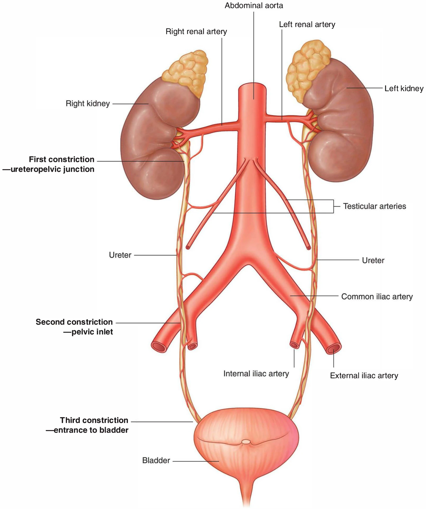
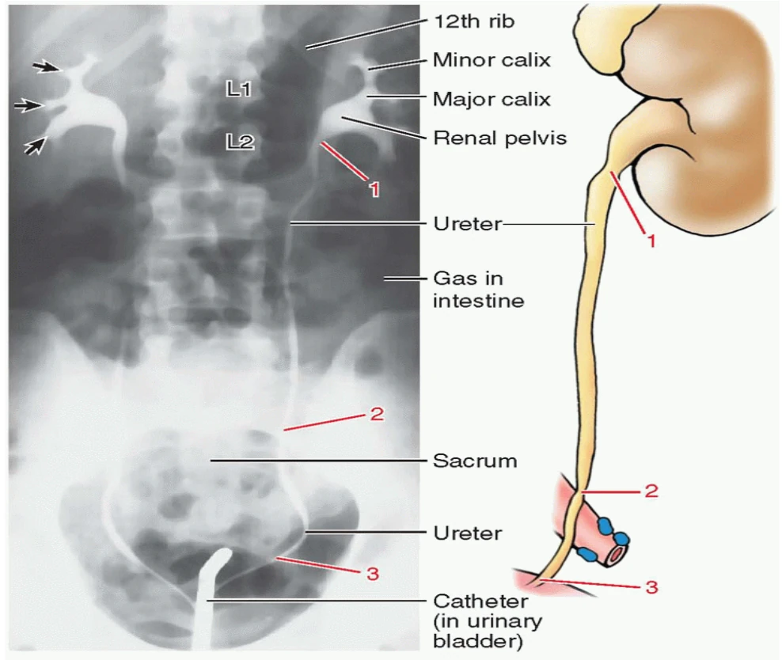
The passage through the bladder wall works as a valve
The ureter does not go straight through the bladder wall. It runs obliquely through the muscle, downward and toward the midline, so its last part is a slanted tunnel.
The slant makes it a valve. As the bladder fills, the pressure inside flattens the tunnel shut. When the bladder muscle contracts to empty the bladder, it squeezes the tunnel and its opening even more tightly. Either way, urine cannot be pushed back up toward the kidney (reflux), so the kidney is protected from the bladder's pressure and from infected urine. Urine still enters, because each wave of peristalsis forces a spurt through the tunnel.
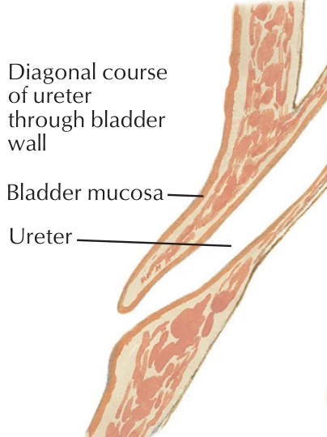
1. A stone is partly blocking the right ureter. The pain runs from the lower back toward the pubic symphysis. Where is the stone most likely lodged? lecture question
2. A small stone has just passed the pelvic brim. Where is it most likely to stick next?
3. On an X-ray taken with contrast in the ureters, a healthy person's ureter looks pinched at three points. What does this mean?
4. In a child, the ureters pass almost straight through the bladder wall instead of obliquely. What is the likely result?
5. The ureter's tunnel through the bladder wall is pressed shut by the pressure in the bladder. How does urine still get in?
Arteries, veins and lymph: each stretch uses its nearest neighbour
The ureter is too long for one artery. Each large artery it passes gives it a few small ureteric branches, and the side they come from depends on where those arteries lie.
| Part of the ureter | Branches come from | They arrive from the |
|---|---|---|
| Abdominal part | The renal artery (the most constant), the gonadal artery, the abdominal aorta and the common iliac artery | Medial side: the aorta and its branches lie medial to the ureter |
| Pelvic part | The internal iliac artery and its branches: superior vesical, middle rectal, uterine and vaginal in women, inferior vesical in men | Lateral side: the internal iliac artery lies on the side wall, lateral to the ureter |
On the ureter each branch splits into a twig running up and a twig running down, and the twigs link into one long chain in its outer coat.
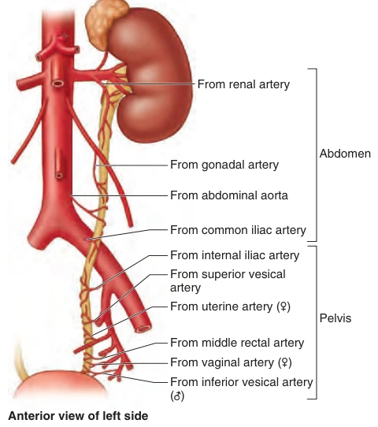
The branches are small and easily torn. If they are torn, or the outer coat is stripped, a stretch of ureter loses its blood (ischemia) in spite of the chain. So a surgeon leaves the ureter in its bed if possible, and otherwise moves it gently toward its blood supply: medially in the abdomen, laterally in the pelvis.
Veins run with the arteries. From the abdominal part they drain into the renal vein and the gonadal vein.
Lymph goes to the nodes beside the nearest large vessels.
- Upper part
- Lumbar nodes (caval and aortic), with the lymph of the kidney Ch 3
- Middle part
- Common iliac nodes
- Pelvic part
- Common, external or internal iliac nodes
From the iliac nodes it climbs through the lumbar nodes to the cisterna chyli and the thoracic duct Ch 7.
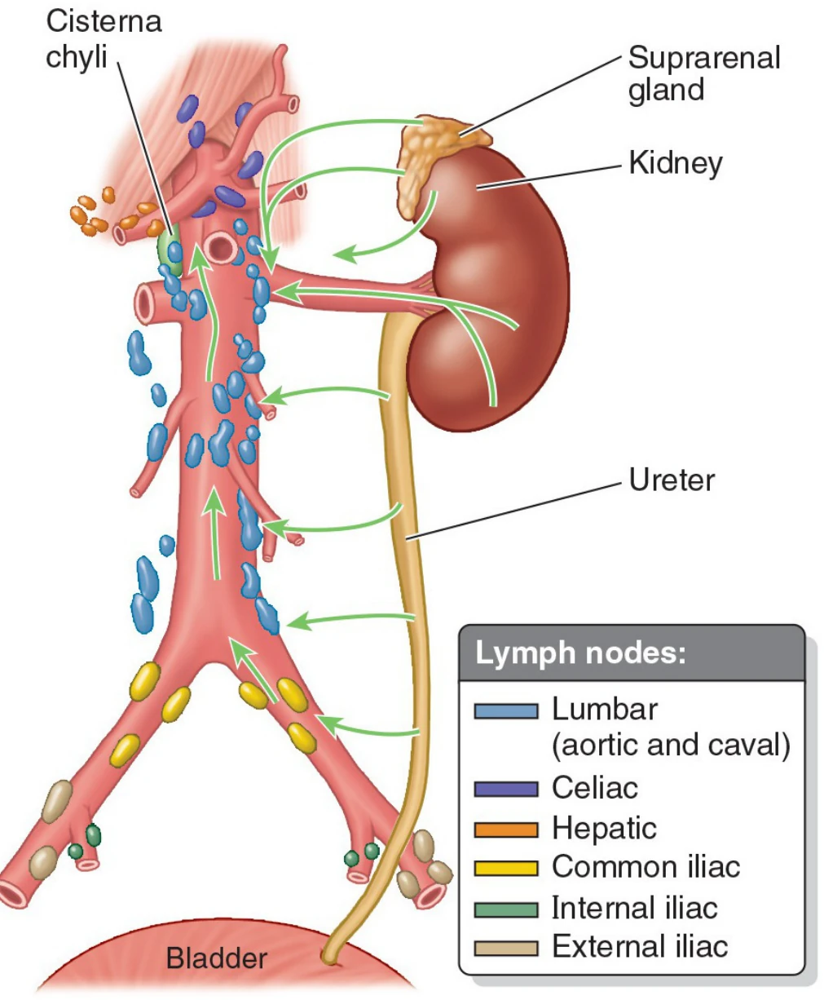
1. The pelvic part of the ureter gets its arteries from branches of which artery?
2. From which side do the arteries reach the abdominal part of the ureter, and why?
3. A surgeon has to move the pelvic part of a ureter. In which direction can it be moved with the least risk to its arteries?
4. A tumor grows in the upper part of a ureter. Which lymph nodes will its cells reach first?
5. Lymph from the middle part of the ureter drains to which nodes?
Nerves, and why a stone hurts from loin to groin
Networks of autonomic nerves (plexuses) lie on the aorta and its branches, and the ureter takes fibers from each one it passes.
| Part of the ureter | Plexus | Parasympathetic fibers from |
|---|---|---|
| Upper end, with the kidney | Renal plexus (sympathetic fibers from the lesser and least splanchnic nerves, Ch 3) | Vagus nerve |
| Rest of the abdominal part | Abdominal aortic and superior hypogastric plexuses | |
| Pelvic part | Inferior hypogastric (pelvic) plexus Ch 10 | Pelvic splanchnic nerves (S2–S4) |
The ureter contracts without these nerves: its waves start in its own muscle. What matters is the pain fibers that travel with them.
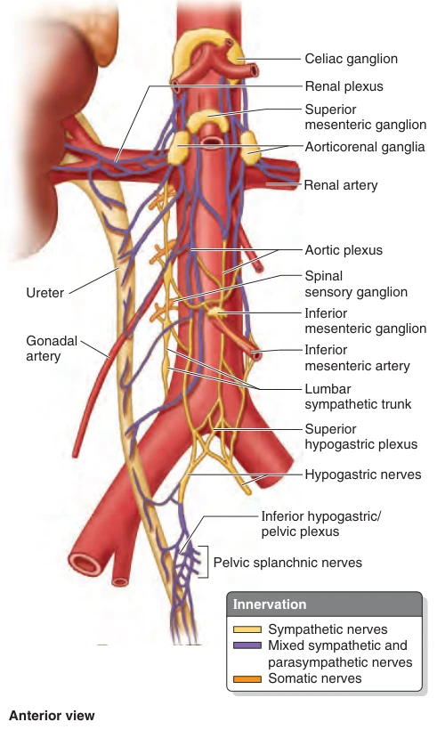
The route of the pain
The ureter feels stretch, not cutting or touch. A stone that blocks it stretches the tube above, which also contracts hard against the stone. Pain fibers (visceral afferent fibers) run back along the sympathetic nerves to cord segments T11 to L2. They do not travel with the parasympathetic fibers of the vagus or of S2–S4.
The brain cannot tell where a signal from an internal organ began, so it places the pain in the skin supplied by the same segments: referred pain. For T11–L2 that skin is a band on the same side as the stone: the loin (lumbar region), the flank, and the lower quadrant of the abdomen down to the groin and the area above the pubis. Through the genitofemoral nerve (L1, L2) it also includes the front of the upper thigh and the scrotum or labia majora.
Why the pain moves. The upper ureter sends its pain fibers to the upper of these segments, and the lower ureter to L1 and L2. So as a stone travels down, the pain moves from loin to groin. A stone at the bladder wall can add bladder symptoms, because the lowest ureter and the bladder share the nerves of S2–S4.
Why it comes in waves. Each wave of peristalsis squeezes the ureter against the stone, so the pain rises and falls with the waves. It is sharp and stabbing and follows the line of the ureter: ureteric colic (renal colic).
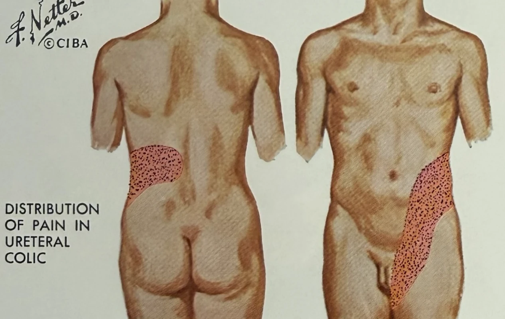
1. A stone is lodged where the ureter crosses the iliac vessels at the pelvic brim, and the man feels the pain in his groin. What best explains the groin pain? lecture question
2. A stone travels from the upper ureter to the lower ureter. Why does the pain move from the loin to the groin?
3. Ureteric colic can be felt in the scrotum or labia majora and the front of the upper thigh. Which nerve supplies that skin?
4. Why does the pain of a stone in the ureter come in waves?
5. Parasympathetic fibers reach the pelvic part of the ureter from which nerves?
Stones in the kidney and the ureter
A stone, or calculus (plural calculi), is a hard lump of crystals formed from substances dissolved in the urine. Stones form in the kidney and may be carried on with the urine, from a minor calyx to a major calyx, the renal pelvis and the ureter Ch 2. So they are found in the calyces, the renal pelvis, the ureter or the bladder. About 80% of patients are men.
| Kind of stone | When it forms |
|---|---|
| Calcium (oxalate or phosphate) | The most common kind |
| Uric acid | A diet high in protein and purines |
| Struvite | Bacterial infection of the urinary tract. It can grow to fill the renal pelvis and calyces in their branched shape, like an antler: a staghorn stone. |
| Cystine | Cystinuria, a rare inherited disorder |
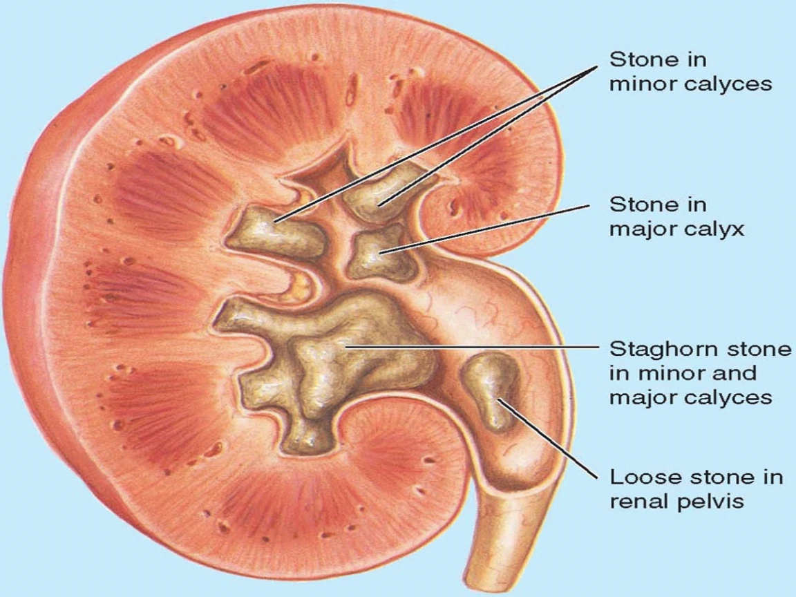
The channel of the ureter is only about 3 mm wide, so size decides what happens.
| Size | What usually happens |
|---|---|
| 4 mm or less | Passes on its own, with a high fluid intake and pain control |
| 5 to 7 mm | Less likely to pass. Needs monitoring or treatment. |
| 8 to 10 mm | Usually has to be broken up: shock wave lithotripsy, or a laser passed up the ureter through a scope (ureteroscopy) |
| Over 10 mm | Needs medical or surgical treatment |
Lithotripsy uses shock waves to break the stone into pieces small enough to pass.
A stone too large to pass lodges at one of the three narrow places Narrow places and causes ureteric colic. It also blocks the urine, partly or completely. Urine backs up, and the renal pelvis and calyces swell: hydronephrosis. The calyces lose their sharp cup shape and become wide and blunt. If severe hydronephrosis lasts, the pressure thins the kidney tissue: renal atrophy.
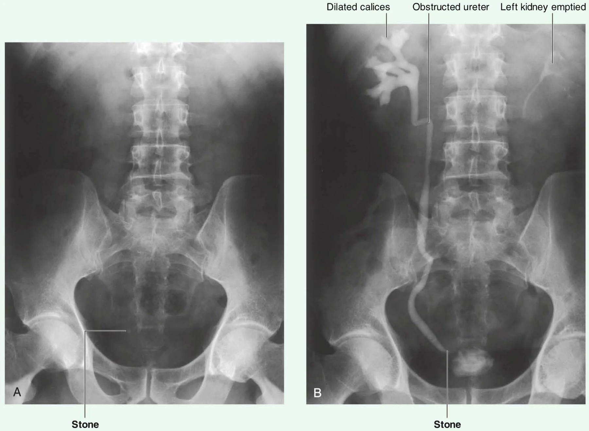
1. Which kind of urinary stone is the most common?
2. A branched stone fills the renal pelvis and calyces like a cast (a staghorn stone). What is it usually made of, and what causes it?
3. A 3 mm stone is found in a ureter. What is the usual plan?
4. A stone has completely blocked one ureter for many weeks. What happens to the kidney on that side?
Variants: a split ureter, and a ureter behind the IVC
The ureter, renal pelvis and calyces all grow from one outgrowth in the embryo, the ureteric bud. If the bud divides, everything beyond the division is doubled.
- Bifid renal pelvis
- Only the pelvis is split, and there is one ureter. Fairly common.
- Bifid ureter
- Two ureters leave the kidney and join before the bladder, like a Y, with one opening. Fairly common.
- Duplicated ureter
- Two complete ureters, each with its own opening into the bladder. Uncommon.
A retrocaval ureter is an uncommon variant of the right ureter, the side of the IVC. It passes behind the IVC and hooks around its medial side. Squeezed behind the vein, it can be obstructed, and the right kidney then develops hydronephrosis.
An accessory renal artery to the lower pole of the kidney Ch 3 crosses in front of the upper end of the ureter and may also obstruct it.
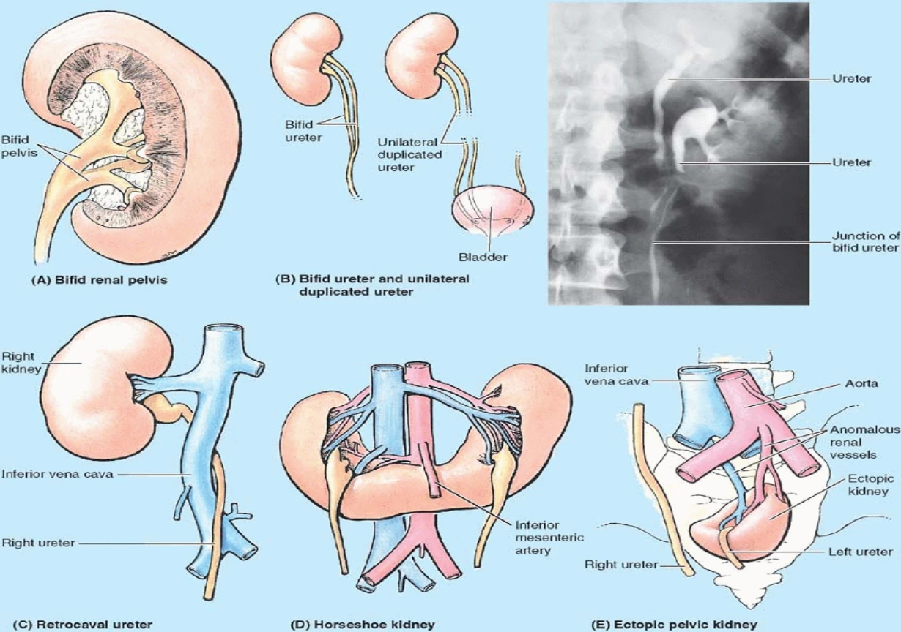
1. Two ureters leave one kidney and join into a single ureter before they reach the bladder. What is this, and how does it arise?
2. In a retrocaval ureter, which ureter passes behind which vessel?
The suprarenal glands
The two suprarenal (adrenal) glands sit on the kidneys but have nothing to do with urine. Each is two hormone glands in one: an outer cortex that makes steroid hormones, and an inner medulla that belongs to the sympathetic nervous system.
Where the glands sit, and what holds them in place
Each suprarenal gland is a small yellowish gland on the upper inner (superomedial) part of a kidney, wedged between the kidney and the diaphragm. Like the kidneys, it is a primary retroperitoneal organ Ch 1.
It lies in the same wrappings as the kidney: embedded in perinephric fat and enclosed by the renal fascia Ch 1. Two details of this wrapping decide how the gland behaves.
- A thin septum of renal fascia passes between the gland and the kidney. So the gland has its own compartment and is not attached to the kidney.
- The fascia fixes it to the diaphragm. Above the gland the renal fascia continues into the fascia of the diaphragm. Through it the gland is attached to the crura of the diaphragm, its two muscular legs beside the aorta.
So, in spite of its name, the gland's main attachment is to the diaphragm, not the kidney.
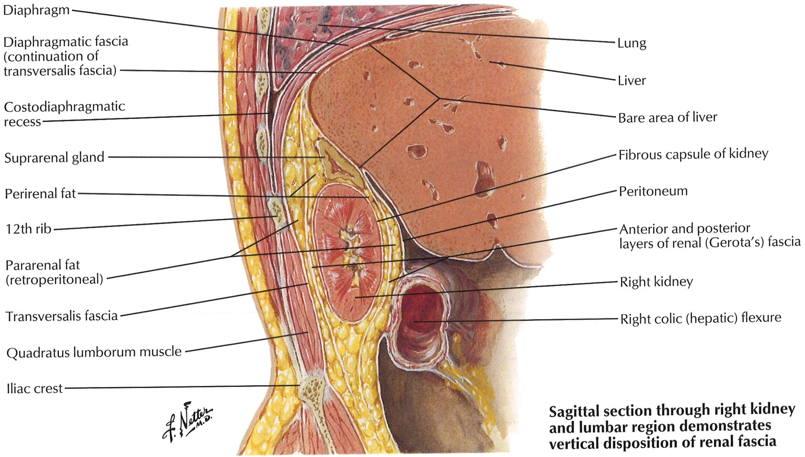
When a kidney drops (nephroptosis, Ch 1), the gland stays in place, because it is in its own compartment and hangs from the diaphragm. For the same reason a kidney can be removed, for example from a donor, without damaging the gland.
1. Where does each suprarenal gland sit?
2. In which layer around the kidney is the suprarenal gland embedded?
3. What is the main attachment of a suprarenal gland?
The right gland and the left gland are not mirror images
The neighbours differ on the two sides: the liver and the inferior vena cava (IVC) on the right, and the stomach, pancreas, spleen and aorta on the left. So the two glands differ too.
| Right gland | Left gland | |
|---|---|---|
| Shape | A pyramid (triangular) | A crescent (semilunar) |
| Position on the kidney | Caps the upper pole | Lies along the medial border of the upper half |
| In front of it | The IVC over its medial part and the liver over its lateral part | The stomach and the pancreas, with the spleen close by |
| Behind it | The right crus of the diaphragm | The left crus of the diaphragm |
| Its vein | Short. Enters the IVC directly. | Longer. Runs down into the left renal vein. |
The last row follows from the others. The right gland lies against the IVC, so its vein has only a very short way to go. The left gland has the aorta between it and the IVC, so its vein joins the left renal vein, which crosses in front of the aorta to the IVC Ch 3.
The two glands are only 4 to 5 cm apart. Between them, from the patient's right to left, lie the IVC, the right crus, the celiac ganglion, the celiac trunk, the superior mesenteric artery (SMA) and the left crus.
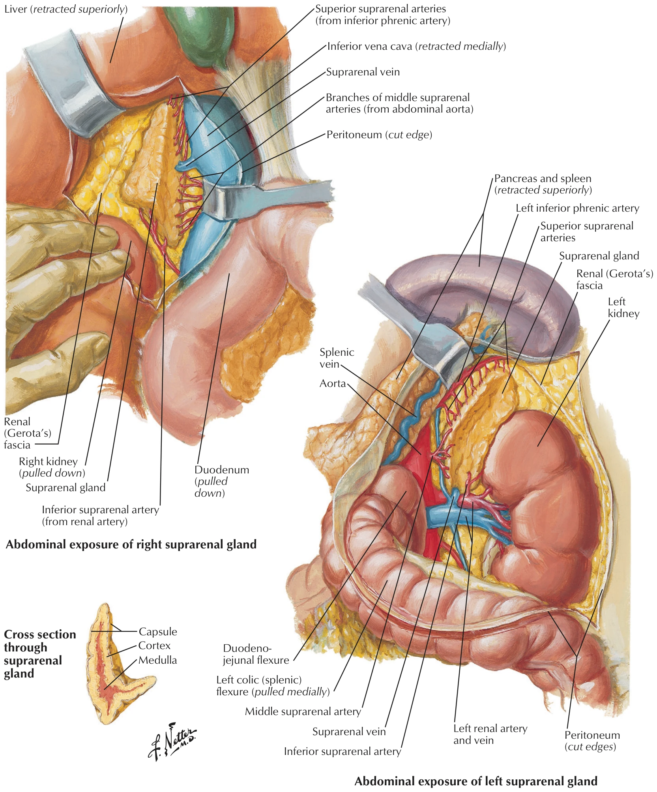
1. What are the shapes of the two suprarenal glands?
2. Which large vessel lies in front of the medial part of the right suprarenal gland?
3. Which organs lie in front of the left suprarenal gland?
4. Which structure lies directly behind each suprarenal gland?
5. Why does the left suprarenal vein not run straight into the IVC, as the right one does?
Three sets of arteries in, one vein out
A hormone gland releases its product straight into the blood, so it needs a large blood flow. It gets it from three sets of arteries, each from the nearest large artery: above, beside and below.
| Arteries | Come from | Reach the gland from |
|---|---|---|
| Superior suprarenal arteries (6 to 8) | The inferior phrenic artery, the first paired branch of the abdominal aorta | Above |
| Middle suprarenal artery | The abdominal aorta itself, near the level of the SMA | The medial side |
| Inferior suprarenal artery | The renal artery | Below |
These branch into 50 to 60 small arteries that pierce the capsule all over the gland. The three sets also join each other around the gland, so if one source is blocked the other two still supply it.
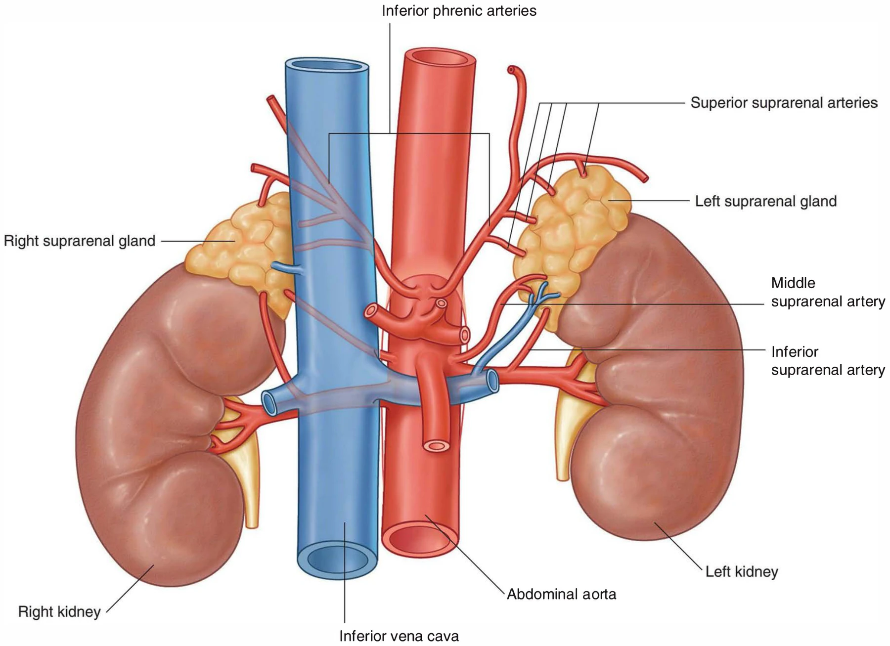
The blood leaves through one large suprarenal vein on each side. It comes out at the hilum on the front of the gland, where the lymph vessels also leave. Arteries and nerves enter all over the surface.
- Right suprarenal vein
- Very short. Drains into the IVC directly.
- Left suprarenal vein
- Longer. Runs down, often joined by the left inferior phrenic vein, and drains into the left renal vein: the same left-versus-right pattern as the gonadal veins Ch 3.
A narrowed renal artery (stenosis) lowers the flow to the kidney and, through the inferior suprarenal artery, to the suprarenal gland of that side. The gland still has its other two sets of arteries. The gonad is not affected: the gonadal arteries come from the aorta itself.
Removing the right gland. The right suprarenal vein is so short that it is easily torn, and the bleeding then comes from the IVC itself. So it is tied with great care. On the left, the vein to find is the one that enters the left renal vein.
Lymph vessels start from a network under the capsule and another in the medulla. Many leave the gland, and they drain to the lumbar nodes, like those of the kidney.
1. Narrowing (stenosis) of the right renal artery reduces arterial flow to which structures? lecture question
2. A surgeon removing a tumor of the right suprarenal gland takes special care with the right suprarenal vein. Which description of this vein is correct? lecture question
3. The superior suprarenal arteries are branches of which artery?
4. The inferior phrenic artery of one side is blocked. What happens to the suprarenal gland of that side?
5. The left suprarenal vein ends in which vessel?
Two glands in one: cortex and medulla
A cut gland shows an outer cortex and an inner medulla. They differ in origin, in the hormones they make, and in how they are switched on.
| Cortex (outer part) | Medulla (inner part) | |
|---|---|---|
| Develops from | Mesoderm | Neural crest cells, like the nerve cells of sympathetic ganglia |
| Makes | Steroid hormones: glucocorticoids (cortisol), mineralocorticoids (aldosterone) and androgens | Catecholamines: mostly epinephrine (adrenaline), some norepinephrine (noradrenaline) |
| Main effect | Maintains blood volume and blood pressure, by making the kidneys keep sodium and water | "Fight or flight" in sudden stress: faster heart rate, higher blood pressure, wider bronchioles |
| Switched on by | Hormones in the blood, not nerves | Sympathetic nerve fibers |
The cells of the medulla are chromaffin cells. Their hormones act like the sympathetic nerves, but they reach every organ at once through the blood.
A pheochromocytoma is a tumor of the chromaffin cells, usually benign. It releases epinephrine and norepinephrine in bursts. Each burst narrows the blood vessels and drives the heart, so the blood pressure rises sharply, with headache, palpitations or chest pain, sweating, flushing, anxiety, tremor and nausea. Because the hormones come in bursts, the symptoms come in episodes.
1. From which embryonic tissue does the suprarenal medulla develop?
2. Which hormones does the suprarenal cortex make?
3. How does the suprarenal cortex help to maintain blood pressure?
4. A pheochromocytoma arises from which cells, and what does it release?
5. Why do the headache, sweating, pounding heart and high blood pressure of a pheochromocytoma come in episodes?
Nerve supply: fibers that skip the ganglion
The glands have a rich nerve supply, from the celiac plexus between them and from the greater, lesser and least splanchnic nerves. The fibers are sympathetic, and nearly all of them go to the medulla.
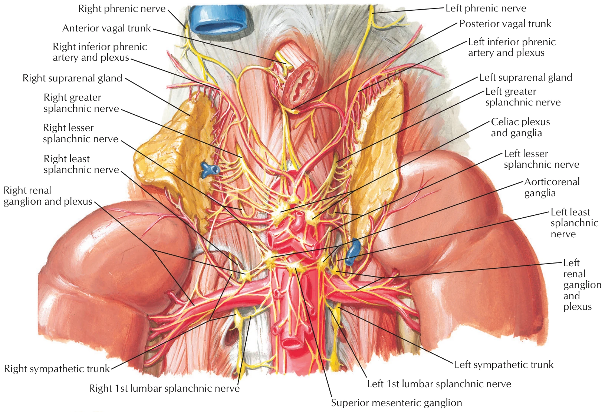
The usual plan. A sympathetic pathway has two nerve cells in a row. The first has its body in the lateral horn of the spinal cord (the intermediolateral cell column, IML), and its preganglionic (presynaptic) fiber ends in a ganglion. There it synapses with the second cell, whose postganglionic (postsynaptic) fiber runs on to the organ.
The plan for the medulla. The preganglionic fibers, mainly from cord segments T10 to L1, pass through the sympathetic trunk (the paravertebral ganglia) and then the celiac ganglion (a prevertebral ganglion) without synapsing. They end directly on the chromaffin cells.
Why. The chromaffin cells are the second nerve cells of the pathway. They come from the neural crest, like the cells of a sympathetic ganglion, but they never grew fibers. Instead of releasing norepinephrine onto one organ, they release epinephrine into the blood. So the medulla is a sympathetic ganglion that has become a gland, and the fibers that reach a ganglion are preganglionic.
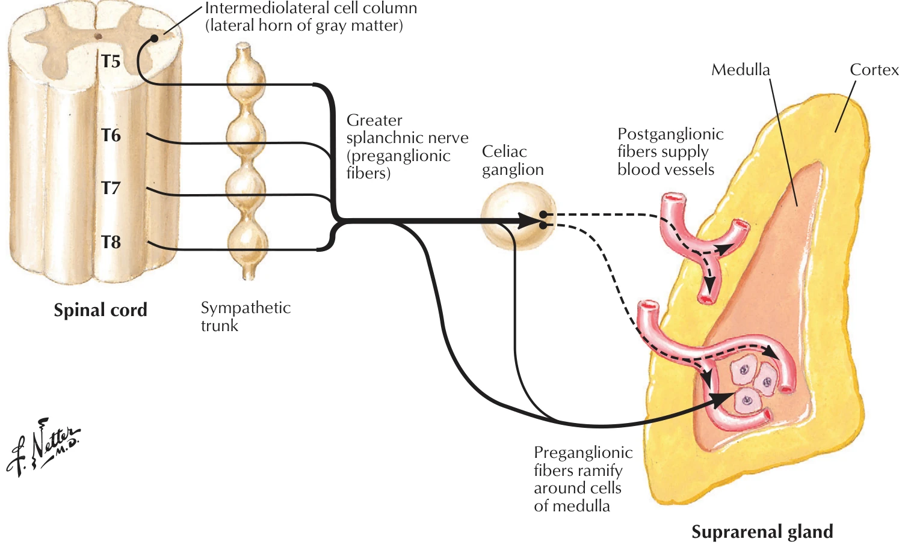
The cortex has no nerves that control its secretion. It is controlled by hormones, such as adrenocorticotropic hormone (ACTH) from the pituitary gland. The few postganglionic fibers that enter the gland supply its blood vessels.
When a suprarenal gland is removed (adrenalectomy), for example for a pheochromocytoma, the nerve fibers cut are preganglionic sympathetic fibers. At almost any other organ they would be postganglionic. The gland has no parasympathetic or somatic motor supply.
1. A suprarenal gland with a pheochromocytoma is removed. Which nerve fibers are cut when the gland is taken out? lecture question
2. Where are the cell bodies of the nerve fibers that end on the chromaffin cells of the medulla?
3. On their way to the medulla, the sympathetic fibers pass through which ganglia without synapsing?
4. Why can preganglionic fibers end directly on the chromaffin cells of the medulla?
5. What controls secretion by the suprarenal cortex?
Muscles of the posterior abdominal wall
Three paired muscles fill in the back wall of the abdomen beside the lumbar spine: psoas major, quadratus lumborum and iliacus. Psoas is the landmark for the whole wall, because the lumbar plexus forms inside it.
How the posterior wall is put together
The posterior abdominal wall is not flat. The lumbar vertebrae bulge forward in the midline, and on each side the wall falls away into a deep groove, the paravertebral gutter, where the kidney, suprarenal gland and ureter lie Ch 1. Muscles form the floor of each gutter:
- Psoas major, right against the sides of the lumbar vertebrae. In some people a thin psoas minor lies on its front.
- Quadratus lumborum, lateral to the upper part of psoas, between rib 12 and the hip bone.
- Iliacus, lateral to the lower part of psoas, lining the iliac fossa (the hollow on the inner face of the hip bone).
At the top, the diaphragm covers the uppermost part of psoas and quadratus lumborum. At the side, the wall is finished off by transversus abdominis and the two obliques. The kidney lies lateral to psoas major and in front of quadratus lumborum.
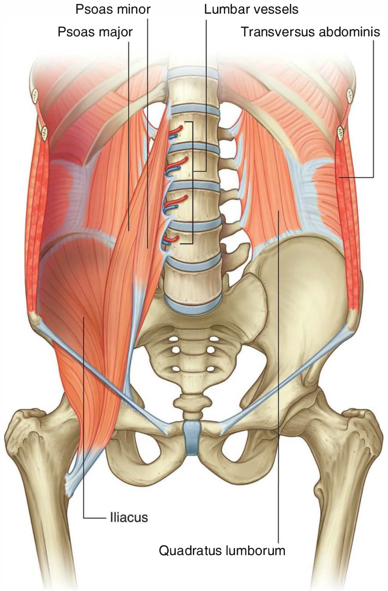
Each muscle has its own fascia. The psoas fascia (psoas sheath) is fixed to the lumbar vertebrae and encloses psoas like a sleeve, which follows the muscle under the inguinal ligament into the thigh. Quadratus lumborum is covered in front by the anterior layer of the thoracolumbar fascia. The other layers of that fascia wrap the deep back muscles behind it.
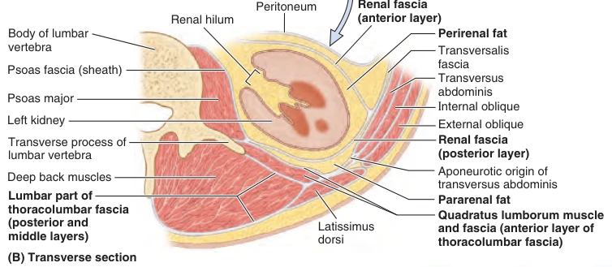
1. Why does the posterior abdominal wall have a deep gutter on each side of the midline?
2. At the level of L2, which order is correct going from the midline outward?
3. In the paravertebral gutter, where does the kidney lie in relation to the muscles of the posterior wall?
4. Which structure covers the uppermost part of psoas major and quadratus lumborum?
5. Which fascia covers the front of quadratus lumborum?
Psoas major and iliacus: one muscle for bending the hip
Psoas major begins on the lumbar spine, runs down along the brim of the pelvis and passes deep to the inguinal ligament into the thigh. Iliacus fans down from the iliac fossa, and most of its fibres join the psoas tendon.
| Muscle | Upper attachment | Lower attachment | Nerve | Action |
|---|---|---|---|---|
| Psoas major | Sides of the bodies of T12–L5 and the discs between them; lumbar transverse processes | Lesser trochanter of the femur, by a strong tendon | Anterior rami of L1–L3 | Flexes the thigh, with iliacus. Legs fixed: flexes the trunk. One side alone: bends the spine to that side. Balances the trunk. |
| Iliacus | Upper two thirds of the iliac fossa; ala (wing) of the sacrum; anterior sacroiliac ligaments | Lesser trochanter and the shaft just below it, mostly through the psoas tendon | Femoral nerve (L2–L4) | Flexes the thigh, with psoas major. Steadies the hip joint. |
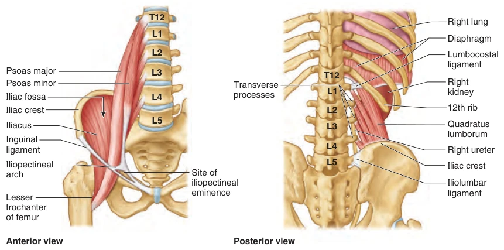
Because they share one tendon, the two act as one muscle, iliopsoas. Psoas minor, when present, is counted with it. Iliopsoas crosses the front of the hip joint, so it flexes the thigh at the hip, and it is the strongest muscle that does. With the legs held still, as when you sit up from lying flat, the same pull flexes the trunk toward the thighs.
Only psoas can move the spine, because only psoas is attached to the vertebrae. One psoas working alone bends the lumbar spine to its own side.
The nerves differ because of where each muscle lies. The lumbar plexus forms inside psoas Ch 8, so psoas gets short branches straight from the anterior rami of L1–L3 as they pass through it. Iliacus lies lower and is supplied by the femoral nerve, which runs down in the groove between the two muscles.
- Inside psoas
- The lumbar plexus, in the back part of the muscle
- On its front
- The genitofemoral nerve; the ureter, crossing it Ch 4; the medial part of the kidney, at its upper end
- Along its medial edge
- The sympathetic trunk, between psoas and the vertebral bodies Ch 8
1. Where does psoas major end, together with iliacus?
2. Which muscles together are called iliopsoas?
3. Which nerve supplies iliacus?
4. Why does psoas major receive branches directly from the anterior rami of L1–L3?
5. Why can psoas major bend the lumbar spine to the side, while iliacus cannot?
6. A person lying flat on the back sits up with the legs held still. What is iliopsoas doing?
Quadratus lumborum
Quadratus lumborum is a thick four-sided sheet of muscle. It fills the gap between the last rib and the hip bone, lateral to the upper part of psoas.
- Above
- Medial half of the lower border of rib 12; tips of the lumbar transverse processes
- Below
- Inner lip of the iliac crest; iliolumbar ligament (from the transverse process of L5 to the iliac crest)
- Nerve
- Anterior rami of T12 and L1–L4
- Action
- Both sides: extends the lumbar spine. One side: bends the trunk to that side. Fixes rib 12 during inspiration.
- In front of it
- The kidney Ch 1, with the subcostal, iliohypogastric and ilioinguinal nerves crossing between the two Ch 8
Fixing rib 12 is the action special to this muscle. The diaphragm is attached to rib 12. When it contracts to draw air in, it would lift that rib instead of pulling its own dome down. Quadratus lumborum holds the rib still, which gives the diaphragm a firm base to pull against.
1. Which muscle of the posterior abdominal wall fixes rib 12 during inspiration?
2. Why does holding rib 12 still help when a person breathes in?
3. The right quadratus lumborum contracts alone. What happens?
4. To which structures is quadratus lumborum attached at its lower end?
5. Which nerves supply quadratus lumborum?
When psoas is inflamed: psoas abscess and the psoas sign
Pus collects inside the psoas sheath when an infection reaches the muscle. The classic source is tuberculosis (TB) of the lumbar vertebrae: psoas arises from those vertebrae, so the infection spreads straight from bone into the sheath. Infection can also spread from the gut lying on the muscle. An abscess is also seen in kidney failure, where weakened defences let bacteria from the blood settle in the muscle.
The pus cannot break through the tough sheath, so it runs down inside it, deep to the inguinal ligament, and shows as a swelling in the upper thigh, far from where the infection began. Because the lumbar plexus lies inside psoas, the abscess can also press on its nerves and cause pain or weakness in the groin and thigh.
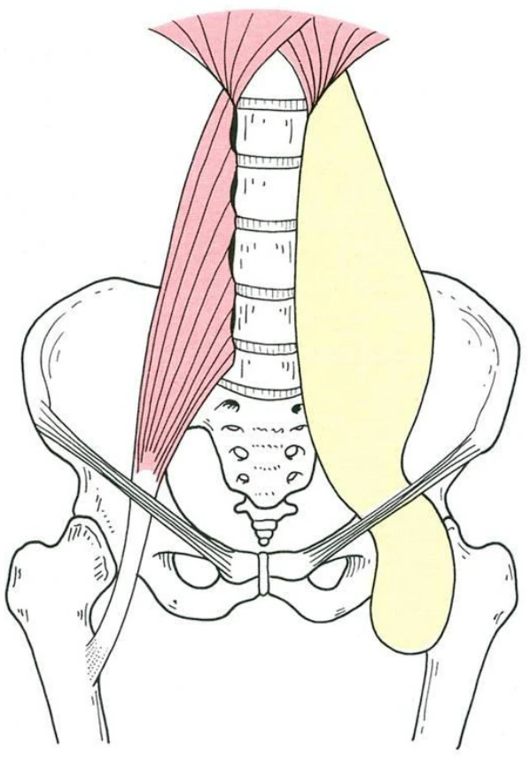
The patient lies on the healthy side, and the examiner pulls the thigh of the painful side backward, extending the hip. Extension is the opposite of what iliopsoas does, so it stretches the muscle. If an inflamed organ lies on psoas, the stretch pulls on it and hurts: a positive psoas sign. On the right the usual cause is acute appendicitis, because the appendix can lie directly on the right psoas and iliacus. Inflammation round the kidney, which also rests on psoas, hurts in the same way Ch 1.
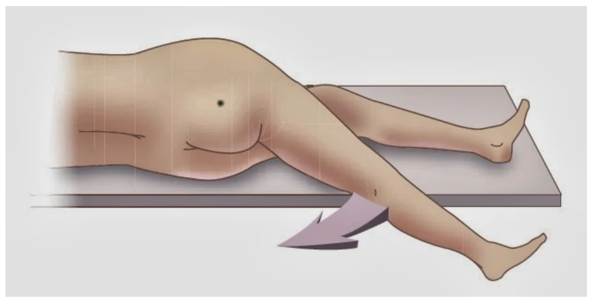
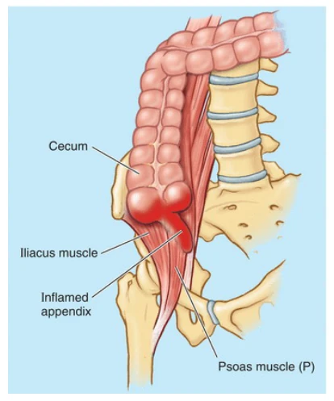
1. Why is tuberculosis of the lumbar vertebrae the classic cause of a psoas abscess?
2. Pus from a psoas abscess runs down inside the psoas sheath. Where does it usually show as a swelling?
3. A psoas abscess causes pain and weakness in the groin and the front of the thigh. Which structure inside the muscle is affected?
4. How is the psoas sign tested?
5. Why does extending the right thigh hurt in acute appendicitis?
The abdominal aorta and the inferior vena cava
Two great vessels run on the front of the lumbar vertebrae: the abdominal aorta just left of the midline, and the inferior vena cava (IVC) on its right. Most of what is lopsided about the vessels of the abdomen follows from one fact: the big vein is on the right.
Where each vessel begins and ends
Both vessels are retroperitoneal (behind the peritoneum, against the posterior wall Ch 1), with a psoas major lateral to each.
| Abdominal aorta | Inferior vena cava | |
|---|---|---|
| Side | Just left of the midline | Just right of the midline, on the right of the aorta |
| Upper end | T12: enters through the aortic hiatus | T8: pierces the diaphragm and enters the right atrium almost at once |
| Lower end | L4, about the level of the umbilicus: divides into the two common iliac arteries | L5: formed by the two common iliac veins |
The aorta does not pierce the diaphragm. It slips behind it through the aortic hiatus, a gap between the diaphragm and the spine.
The IVC forms a little to the right of the midline, just below the point where the aorta divides, and behind the right common iliac artery. It climbs on the right of the aorta and behind the liver.
The IVC leaves the abdomen four vertebrae higher than the aorta enters it, and the reason is the heart. The right atrium sits directly on the diaphragm, and the IVC goes straight up into it through the central part of the diaphragm. The aorta comes down along the back of the chest, stays against the spine, and passes behind the diaphragm at its lowest, most posterior point.
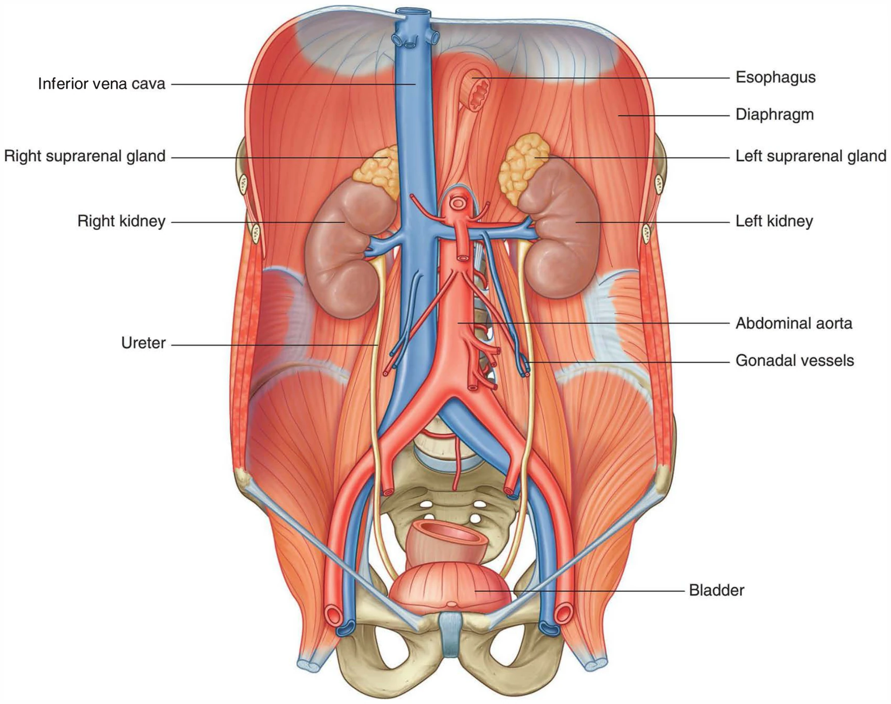
1. At the level of L3, how do the two great vessels lie on the front of the vertebral body?
2. How does the aorta get from the chest into the abdomen?
3. At what vertebral level does the abdominal aorta divide into the common iliac arteries?
4. Where does the IVC form?
5. At what vertebral level does the IVC pass through the diaphragm?
6. Why does the IVC leave the abdomen higher than the aorta enters it?
Branches of the aorta: three directions, three jobs
The branches of the abdominal aorta sort themselves by the direction in which they leave, and each direction goes with one kind of target.
| Direction from the aorta | Paired? | Supplies | Arteries, with vertebral level |
|---|---|---|---|
| Forward, in the midline (anterior) | Unpaired | The gut and the organs that go with it | Celiac trunk (T12) Superior mesenteric artery (L1) Inferior mesenteric artery (L3) |
| Sideways (lateral) | Paired | The suprarenal glands, kidneys and gonads | Middle suprarenal (L1) Renal (L1–L2 disc) Gonadal: testicular or ovarian (L2) |
| Backward and sideways (posterolateral) | Paired | The diaphragm and the body wall | Inferior phrenic (T12) Subcostal (below rib 12) Lumbar, four pairs (L1–L4) |
Forward. The gut grew as one tube in the midline, hanging from the posterior wall in front of the aorta. So its arteries are single and leave the front of the aorta: the celiac trunk, the superior mesenteric artery (SMA) and the inferior mesenteric artery (IMA).
Sideways. The suprarenal glands, kidneys and gonads are paired organs that form beside the aorta, so each gets its own artery from the side: the middle suprarenal Ch 5, renal (just below the SMA Ch 3) and gonadal arteries. The gonadal arteries leave as high as L2 because the testes and ovaries form high on the posterior wall. They move down later and pull their long, thin arteries with them.
Backward. The body wall is built in segments. Each segment gets a pair of arteries that leave the back of the aorta and wrap round the wall, like the intercostal arteries in the chest. These are the four pairs of lumbar arteries, and the subcostal arteries below rib 12, which leave the aorta just above the diaphragm. The inferior phrenic arteries, to the underside of the diaphragm, belong to this group too, and they are the very first branches of the abdominal aorta.
The median sacral artery fits none of the three groups. It is unpaired, but it leaves the back of the aorta just above the fork and runs down the front of the sacrum.
From above down, the order is: inferior phrenic, celiac trunk, middle suprarenal, SMA, renal, gonadal, IMA, median sacral. The aorta then divides into the common iliac arteries Ch 11.
1. Which branches leave the sides (lateral surface) of the abdominal aorta?
2. Why are the arteries to the gut single vessels that leave the front of the aorta?
3. Which artery leaves the front of the aorta at L3?
4. Which are the very first branches of the abdominal aorta, just below the diaphragm?
5. The gonadal arteries leave the aorta at L2, far above the testis or ovary. Why?
6. An artery leaves the back of the aorta at L3 and curves backward round the vertebral body. What does it supply?
The inferior vena cava and the veins that enter it
The IVC is the largest vein in the body and has no valves. It returns the blood from the lower limbs, the pelvis, the back, the abdominal walls and the abdominal organs.
Blood from the gut reaches it by a detour. The veins of the stomach, intestines, pancreas and spleen form the portal vein, which goes to the liver first. The blood then enters the IVC through the hepatic veins, just below the diaphragm. So the IVC has no tributaries that match the three single gut arteries. Its tributaries match the paired branches of the aorta. From below up they are: the common iliac veins, the lumbar veins, the right gonadal vein, both renal veins, the right suprarenal vein, and last the hepatic veins.
The gonadal and suprarenal veins are on that list for the right side only. Because the IVC lies to the right of the aorta, every vein from the left has to get past the aorta to reach it, and each does it in its own way.
- The left renal vein crosses in front of the aorta, just below the SMA, so it is much longer than the right one Ch 3.
- The left lumbar veins cross behind the aorta.
- The left gonadal and left suprarenal veins do not cross at all. They end in the left renal vein, which carries their blood across. On the right, the same two veins lie next to the IVC and enter it directly Ch 3.
- The left common iliac vein crosses behind the right common iliac artery.
For the same reason an artery has to give way on the right: the right renal artery passes behind the IVC to reach its kidney Ch 3.
The IVC forms directly behind the first part of the right common iliac artery. If that artery balloons out (an aneurysm), it presses on the beginning of the IVC. Blood from both legs is held up, so both legs feel full, and a dull ache may be felt in the groin. Less blood returns to the heart, so the patient is lightheaded and the heart beats fast. Pressure on one common iliac vein would affect one leg only.
1. Which of these is true of the IVC?
2. By which route does blood from the small intestine reach the IVC?
3. The tributaries of the IVC match which branches of the aorta?
4. Why do veins from the left side of the body have to cross the aorta?
5. Which left-sided veins reach the IVC by passing behind the aorta?
6. An aneurysm of the right common iliac artery causes fullness in both legs, lightheadedness and a fast heart rate. Which structure is it compressing? lecture question
Aneurysm of the abdominal aorta
The lower aorta lies close to the front of the body. At L4, the level of the umbilicus, it rests on the forward curve of the lumbar spine, and in children and thin adults its pulse can be felt through the relaxed abdominal wall.
An aneurysm is a ballooning of one stretch of an artery where its wall is weak, from birth (congenital) or from later damage (acquired). In the abdominal aorta most form low down, where the inferior mesenteric artery branches off, below the renal arteries.
Many cause no symptoms. A large one is felt on deep palpation as a pulsating mass just left of the midline, where the aorta lies, and it can be moved easily from side to side.
Rupture causes sudden severe pain in the abdomen or back. Blood is lost so fast that about 90% of patients die if it is not recognised in time.
There are two ways to repair it. In open surgery the aneurysm is opened, a prosthetic graft (a man-made tube) is sewn inside, and the aortic wall is closed over it. In endovascular repair the graft is passed up inside the artery through a catheter.
Firm pressure over the umbilicus squeezes the lower aorta against the body of L4. In a child or a thin adult this can slow bleeding in the pelvis or the lower limbs.
1. Where do most abdominal aortic aneurysms form?
2. A large abdominal aortic aneurysm is felt as a pulsating mass. Where?
3. A patient with a known abdominal aortic aneurysm has sudden severe pain in the back. If this is not recognised, what is the outcome in most patients?
4. What is done in the open repair of an abdominal aortic aneurysm?
5. In a thin person, firm pressure over the umbilicus squeezes the aorta against which vertebra?
Lymph nodes along the great vessels
Lymph vessels follow the blood vessels. So the nodes of the posterior wall lie in chains along the iliac vessels, the aorta and the IVC, and lymph moves up from one group to the next.
Lymph from the lower limb and the pelvis passes through the external and internal iliac nodes, then the common iliac nodes, then the lumbar nodes.
The lumbar nodes lie beside the aorta and the IVC, so they are also called aortic and caval nodes. They also receive lymph directly from the kidneys, the suprarenal glands and the upper ureters, whose lymph vessels follow the renal vessels back to the aorta Ch 3. The middle part of the ureter drains to the common iliac nodes, and the pelvic part to the common, internal or external iliac nodes Ch 4.
The gut has its own nodes, on the front of the aorta round the roots of its three arteries. The celiac nodes are the highest of them.
All the streams meet in front of L1 and L2, on the right side of the aorta. The lumbar trunks from the lumbar nodes and the trunk from the gut nodes join in a small sac, the cisterna chyli, where the thoracic duct begins. The duct passes up through the aortic hiatus beside the aorta and empties into the veins at the root of the neck on the left. Nearly all the lymph from below the diaphragm returns to the blood this way.
Cancer cells in lymph vessels are caught in the first nodes they reach. For a cancer of the kidney that is the lumbar nodes. It is not the cisterna chyli, which gets the lymph only afterwards. The celiac nodes serve the gut, the hepatic nodes the liver, and the common iliac nodes the middle of the ureter.
1. Lymph from the lower limb passes through groups of nodes in which order?
2. A cancer of the left kidney spreads by lymph. Which structure do the cancer cells reach first? lecture question
3. Which nodes receive the lymph of the stomach and intestines?
4. Which lymph trunks join at the cisterna chyli?
5. Where does the thoracic duct return lymph to the blood?
The lumbar plexus and the lumbar sympathetic trunk
The lumbar plexus is a network of nerves that forms inside psoas major from the anterior rami of spinal nerves L1 to L4. Its branches supply the lowest part of the abdominal wall, the groin, and the front and inner side of the thigh. Each branch can be recognised by the place where it comes out of psoas. The sympathetic trunk runs down beside the plexus, along the medial edge of the same muscle.
How the plexus is built
Every spinal nerve divides, as soon as it leaves the spine, into a small posterior ramus for the back and a large anterior ramus for the front of the trunk and the limbs. (Ramus means branch.) In the chest the anterior rami stay separate and run round the body as the intercostal nerves. In the lumbar region they join and exchange fibres before they separate again into the named nerves. A network like this is called a plexus. The result of the mixing is that most of the final nerves carry fibres from more than one spinal segment.
The lumbar plexus is made by the anterior rami of L1, L2, L3 and L4. Two neighbours are usually described with it.
- T12. Its anterior ramus is the subcostal nerve, which often sends a small twig down to L1.
- L5. Part of L4 runs down to join L5, and the two form the lumbosacral trunk. The trunk does not stay in the abdomen. It carries L4 and L5 fibres down into the pelvis, to the sacral plexus Ch 10.
The plexus forms inside psoas major, in the back part of the muscle, in front of the transverse processes of the lumbar vertebrae. This is why every one of its branches is found next to psoas.
The plexus has two jobs. It gives motor and sensory supply to the lower limb, mainly the front and inner side of the thigh. And it gives sensory supply to the groin (the inguinal region) and the skin just above it.
It has seven branches. Their roots follow a simple pattern. The first two branches come from one root (L1). The next two come from two roots each. The two large nerves, femoral and obturator, come from three roots (L2–L4). The seventh, the lumbosacral trunk, carries L4 and L5.
1. The lumbar plexus is formed by the anterior rami of which spinal nerves?
2. Inside which muscle does the lumbar plexus form?
3. What is the lumbosacral trunk?
4. Which nerve is the anterior ramus of T12, usually described together with the lumbar plexus?
5. Which two nerves of the lumbar plexus both arise from L2, L3 and L4?
Where each nerve leaves psoas major
Because the plexus forms inside psoas, each nerve has to come out of the muscle somewhere. It comes out on the side that faces the place it is going to. That gives three groups.
- Lateral border. The nerves heading for the abdominal wall, the hip bone and the front of the thigh. From above down: iliohypogastric, ilioinguinal, lateral cutaneous nerve of the thigh, femoral.
- Anterior surface. One nerve only, the genitofemoral. It pierces straight through the muscle and runs down on its front.
- Medial border. The two that are going down into the pelvis: the obturator nerve and the lumbosacral trunk.
The table lists the seven branches in order.
| Nerve | Roots | Leaves psoas at its | Supplies |
|---|---|---|---|
| Iliohypogastric | L1 | Lateral border | Lowest fibres of the abdominal wall muscles; skin just above the pubis |
| Ilioinguinal | L1 | Lateral border | Lowest fibres of the abdominal wall muscles; skin of the groin |
| Genitofemoral | L1–L2 | Anterior surface | Cremaster muscle (genital branch); skin at the top of the front of the thigh (femoral branch) |
| Lateral cutaneous nerve of the thigh | L2–L3 | Lateral border | Skin of the lateral side of the thigh; no muscles |
| Femoral | L2–L4 | Lateral border | Iliacus and the muscles of the front of the thigh; skin of the front of the thigh and the inner side of the leg |
| Obturator | L2–L4 | Medial border | Adductor muscles of the inner thigh; skin of the inner thigh |
| Lumbosacral trunk | L4–L5 | Medial border | Nothing in the abdomen: it joins the sacral plexus |
The femoral and obturator nerves have the same roots but go opposite ways. The femoral nerve leaves psoas laterally and supplies the front of the thigh. The obturator nerve leaves psoas medially and supplies the inner side of the thigh.
1. Which nerve of the lumbar plexus pierces psoas major and runs down on its anterior surface?
2. Which nerve of the lumbar plexus leaves the medial border of psoas major?
3. Why do the obturator nerve and the lumbosacral trunk both come out on the medial side of psoas major?
4. Which nerve runs down in the groove between psoas major and iliacus?
5. From above down, in which order do nerves leave the lateral border of psoas major?
The upper nerves: abdominal wall and groin
The subcostal nerve and the three nerves that carry L1 fibres stay in the trunk. They supply the lowest part of the abdominal wall and the skin of the groin.
Subcostal nerve (T12)
The subcostal nerve is not a branch of the plexus and does not pass through psoas, but it runs just above the first branch of the plexus and parallel to it. It is found immediately below rib 12, as its name says (sub-costal: under the rib). It runs downward and laterally across the front of quadratus lumborum, then pierces transversus abdominis and continues forward inside the abdominal wall. It supplies the muscles of the wall and a strip of skin.
Iliohypogastric and ilioinguinal nerves (L1)
The iliohypogastric and ilioinguinal nerves both come from L1 and leave the lateral border of psoas high up. They cross the front of quadratus lumborum, just below the subcostal nerve and parallel to it. All three of these nerves therefore lie behind the kidney, between it and quadratus lumborum Ch 1.
The two L1 nerves then run just above the iliac crest. The ilioinguinal nerve is the lower of the two and follows the crest toward the anterior superior iliac spine (ASIS), the front end of the crest. Near the ASIS they pierce transversus abdominis and run forward between the layers of the abdominal wall.
Often only one nerve is seen crossing the posterior wall here instead of two. The anterior ramus of L1 can stay single for a long way, and split into the iliohypogastric and ilioinguinal nerves only after it has pierced transversus abdominis.
Their names say where they end. The iliohypogastric nerve supplies the skin of the hypogastric region, the area just above the pubis. The ilioinguinal nerve runs through the inguinal canal and supplies the skin of the groin: the upper inner thigh and the front of the scrotum or the labium majus. On the way, both give branches to the lowest fibres of the internal oblique and transversus abdominis muscles.
Genitofemoral nerve (L1–L2)
The genitofemoral nerve is the only branch that pierces psoas. It comes out on the anterior surface of the muscle and runs straight down on it, under the psoas fascia. A little above the inguinal ligament it divides into the two branches that its name describes.
- The genital branch enters the inguinal canal. In men it supplies the cremaster, the thin muscle round the spermatic cord that lifts the testis.
- The femoral branch passes under the inguinal ligament and supplies a small area of skin at the top of the front of the thigh.
Stroking the skin of the upper inner thigh makes the cremaster contract, and the testis on that side is drawn up. The touch is carried in by L1 and L2 fibres from the skin of the thigh (in the ilioinguinal nerve and the femoral branch of the genitofemoral nerve). The command to the muscle goes out through the genital branch of the genitofemoral nerve. So the cremasteric reflex tests spinal segments L1 and L2.
1. Which three nerves cross the front of quadratus lumborum, behind the kidney?
2. The iliohypogastric and ilioinguinal nerves run just above the iliac crest. Which muscle do they then pierce near the anterior superior iliac spine (ASIS)?
3. Only one L1 nerve is seen crossing the posterior abdominal wall, where two are expected. What is the usual explanation?
4. Which area of skin does the ilioinguinal nerve supply?
5. Which nerve carries the motor fibres to the cremaster muscle?
6. The cremasteric reflex tests which segments of the spinal cord?
The lower nerves: thigh and pelvis
The remaining nerves leave the abdomen for the lower limb or the pelvis. Each one uses a different way out.
Lateral cutaneous nerve of the thigh (L2–L3)
The lateral cutaneous nerve of the thigh leaves the lateral border of psoas below the ilioinguinal nerve. It runs obliquely across iliacus toward the ASIS, passes under the lateral end of the inguinal ligament right beside the ASIS, and supplies the skin of the lateral side of the thigh. Cutaneous means "of the skin": this nerve supplies no muscles.
Femoral nerve (L2–L4)
The femoral nerve is the largest branch of the plexus. It comes out low on the lateral border of psoas and runs down in the groove between psoas and iliacus, giving branches to iliacus on the way. It passes under the inguinal ligament together with iliopsoas and enters the front of the thigh. There it supplies the muscles that flex the hip and extend (straighten) the knee, and the skin of the front of the thigh and the inner side of the leg.
Obturator nerve (L2–L4)
The obturator nerve leaves the medial border of psoas and runs deep and medial to the muscle. It crosses the pelvic brim, runs along the side wall of the pelvis, and leaves through the obturator canal, the gap at the top of the obturator foramen Ch 9. In this way it reaches the inner (medial) side of the thigh. There it supplies the adductor muscles, which pull the thighs together, and an area of skin.
Lumbosacral trunk (L4–L5)
The lumbosacral trunk also lies medial and deep to psoas. It passes over the ala (wing) of the sacrum into the pelvis, where it joins the sacral nerves to form the sacral plexus Ch 10.
The plexus and its branches can be damaged in several ways. A physical injury (a wound, a fracture or an operation) can cut or stretch them. A cancer or a benign growth on the posterior wall can press on them. A hernia in the groin, or its repair, can squeeze or cut the nerves that run there, the ilioinguinal and the genitofemoral. Diabetes damages the nerve fibres directly, with no mass at all. A psoas abscess can do it too, because the plexus lies inside the muscle Ch 6.
What the patient loses tells you which nerve is affected. Femoral nerve: weak bending of the hip and straightening of the knee, and numb skin on the front of the thigh. Obturator nerve: weak adduction of the thigh. Genitofemoral nerve: a lost cremasteric reflex. Ilioinguinal nerve: numb or painful skin in the groin. Lateral cutaneous nerve of the thigh: numb skin on the lateral thigh, with no weakness.
1. Which nerve passes under the inguinal ligament right beside the anterior superior iliac spine (ASIS)?
2. A patient cannot straighten the knee, and the skin on the front of the thigh is numb. Which nerve is damaged?
3. After an operation on the side wall of the pelvis, a patient cannot pull the thigh inward (adduct it). Which nerve was injured?
4. Over which part of the skeleton does the lumbosacral trunk pass on its way into the pelvis?
5. A patient with long-standing diabetes has pain and weakness in the thigh, and a scan shows no mass. How does diabetes harm the lumbar plexus?
The lumbar sympathetic trunk
The sympathetic trunk is a chain of small swellings joined by a nerve cord. One runs down each side of the vertebral column. The swellings are ganglia: clusters of nerve cell bodies. The lumbar part of each trunk has four ganglia.
- Comes from
- The thoracic part of the same trunk, which enters the abdomen behind the diaphragm
- Runs
- Down the anterolateral surface of the lumbar vertebral bodies, in the groove medial to psoas major
- In front of it
- On the right, the IVC covers the trunk. On the left, the edge of the aorta overlaps it.
- Continues as
- The sacral part of the trunk, after it crosses the pelvic brim onto the front of the sacrum
To understand what leaves the trunk, recall how a sympathetic pathway is built. It always has two nerve cells in a row. The first cell lies in the spinal cord. Its fibre, the preganglionic fibre, runs out to a ganglion. There it passes the signal to the second cell, whose fibre, the postganglionic fibre, runs on to the target. The lumbar trunk sends out both kinds of fibre, to two different places.
To the body wall and the lower limb: postganglionic fibres. For these targets, the hand-over between the two cells takes place in the four lumbar ganglia. The postganglionic fibres leave each ganglion through a short link to the nearby spinal nerve (a gray ramus communicans). They then travel inside the branches of the lumbar plexus to the blood vessels, the sweat glands and the tiny muscles that raise the hairs, in the skin of the abdominal wall and the lower limb.
To the pelvic organs: the lumbar splanchnic nerves. Splanchnic means "to the organs". The lumbar splanchnic nerves leave the medial side of the trunk and run forward onto the aorta. They carry preganglionic fibres, which have passed through the trunk without handing over. Their hand-over takes place further on, in ganglia of the nerve plexuses on the front of the aorta and just below the point where it divides. The postganglionic fibres go on from there to the pelvic organs Ch 10.
The difference has a simple reason. Fibres for the wall and the limb reach their targets by joining the spinal nerves, and the trunk lies right beside those nerves, so the hand-over is made in the trunk. Fibres for the organs reach their targets by following arteries, so their hand-over is made in ganglia on the aorta, where those arteries begin.
1. Where does the lumbar sympathetic trunk lie?
2. Which great vessel lies in front of the right lumbar sympathetic trunk?
3. How many ganglia does the lumbar part of each sympathetic trunk usually have?
4. How do sympathetic fibres reach the sweat glands and blood vessels of the lower limb?
5. What kind of fibres do the lumbar splanchnic nerves carry?
6. Which targets do the lumbar splanchnic nerves supply?
The bony pelvis
The bony pelvis is a ring made of the two hip bones, the sacrum and the coccyx. It passes the weight of the trunk from the spine to the legs, and it walls in a bowl for the bladder, the rectum and the reproductive organs. Nerves and vessels can leave this bowl only through a few openings, so the shape of the bones decides where everything runs.
The pelvic girdle is a ring of four bones
The pelvic girdle is the two hip bones (also called innominate, coxal or pelvic bones), the sacrum (five fused vertebrae) and the coccyx (the tailbone). They form a closed ring. Behind, each hip bone meets the side of the sacrum at a sacroiliac joint. In front, the two hip bones meet in the midline at the pubic symphysis. On its outer side each hip bone has a deep socket, the acetabulum, which holds the head of the femur (the thigh bone).
The ring's main job is to carry weight. The weight of the head, arms and trunk comes down the spine to the sacrum and crosses the two sacroiliac joints into the hip bones. From there it passes to the femurs when you stand, and to the ischial tuberosities (the sitting bones) when you sit. The ring also protects the organs inside it and gives attachment to muscles of the trunk and the lower limb.
The word pelvis (Latin for basin) means the space inside the ring. It is open to the abdomen above, and it has openings to the lower limb and to the perineum, the region between the thighs that holds the anus and the external genitalia.
1. Which bones make up the pelvic girdle?
2. Where do the two hip bones meet each other?
3. In a standing person, the weight of the trunk reaches the hip bones by crossing which joints?
4. When a person sits, which part of the hip bone carries the weight of the body?
The hip bone is three bones fused at the hip socket
Each hip bone begins as three separate bones. The ilium is the upper part, the broad wing under your hands when they rest on your hips. The ischium is the lower back part, the bone you sit on. The pubis is the lower front part. All three meet in the acetabulum, so each of them forms part of the hip socket. In a child they are held together there by a Y-shaped plate of cartilage, the triradiate cartilage. It turns into bone during puberty, and by about 16 to 18 years the three have fused into one hip bone.
Below the acetabulum, the ischium and the pubis surround a large hole, the obturator foramen. In life a sheet of fibrous tissue, the obturator membrane, closes it almost completely. Only a small gap stays open at the top, the obturator canal.
1. The ilium, the ischium and the pubis all meet in which structure?
2. An X-ray of a 9-year-old shows a dark Y-shaped line crossing the hip socket. What is it?
3. By about what age have the ilium, ischium and pubis fused into a single hip bone?
4. Which two bones surround the obturator foramen?
5. In a living person, what closes most of the obturator foramen?
The ilium
The ilium has a thick body, which forms the upper part of the acetabulum, and a thin fan-shaped ala (wing). The upper edge of the wing is the iliac crest, where muscles of the abdominal wall attach to its outer and inner lips. The crest ends in a spine at each end, and a second spine lies just below each of those.
| Spine | Where it is | What to know |
|---|---|---|
| Anterior superior iliac spine (ASIS) | Front end of the iliac crest | Easy to feel under the skin. The inguinal ligament runs from it to the pubic tubercle. |
| Anterior inferior iliac spine (AIIS) | Just below the ASIS, right above the acetabulum | On an X-ray it is the bump just above the hip joint. |
| Posterior superior iliac spine (PSIS) | Back end of the iliac crest | It lies under the skin dimple on each side of the lower back. |
| Posterior inferior iliac spine (PIIS) | Just below the PSIS | It marks the top of the greater sciatic notch, the deep curve in the back edge of the hip bone. |
- Gluteal lines
- Three faint ridges on the outer surface (posterior, anterior, inferior). They are the borders between the areas where the three gluteal (buttock) muscles arise.
- Iliac fossa
- The smooth hollow that fills the front of the inner surface. The iliacus muscle arises from it Ch 6.
- Auricular surface
- The ear-shaped, cartilage-covered area behind the fossa. It forms the joint with the sacrum.
- Iliac tuberosity
- The rough area above and behind the auricular surface, where the strong sacroiliac ligaments attach.
- Arcuate line
- The rounded ridge along the lower edge of the iliac fossa. It is part of the pelvic brim.
In an adult the spongy bone of the ilium is filled with red marrow, which makes blood cells. Marrow is taken from the posterior part of the iliac crest, near the PSIS. The crest lies just under the skin there, the bone is thick, and no large vessel, nerve or organ is near the needle. The patient lies on the side or face down.
1. Which landmark of the ilium anchors the lateral end of the inguinal ligament?
2. Which landmark lies under the skin dimple on each side of the lower back?
3. Which spine marks the upper end of the greater sciatic notch?
4. From which part of the hip bone is bone marrow usually taken?
5. Which surface of the ilium forms the synovial joint with the sacrum?
6. What do the three gluteal lines on the outer surface of the ilium mark?
The ischium
The body of the ischium forms the lower back part of the acetabulum and continues down to a large rough lump, the ischial tuberosity. From the tuberosity the ramus of the ischium runs forward and joins the inferior ramus of the pubis. The joined bar is the ischiopubic ramus, the lower rim of the obturator foramen.
- Ischial spine
- A sharp point that projects backward and toward the midline, between the greater sciatic notch above and the lesser sciatic notch below. The sacrospinous ligament attaches to it.
- Lesser sciatic notch
- The small curve between the ischial spine and the ischial tuberosity.
- Ischial tuberosity
- The lowest part of the hip bone. Your weight rests on the two tuberosities when you sit. The sacrotuberous ligament attaches to it.
The pudendal nerve, the main sensory nerve of the perineum, crosses the sacrospinous ligament right where the ligament attaches to the ischial spine. The spine can be felt with a finger through the wall of the vagina, so the anaesthetic is injected beside it Ch 10.
1. Going down the back edge of the hip bone from the greater sciatic notch, what is the order of landmarks?
2. The ischiopubic ramus is the ramus of the ischium joined to which part of the pubis?
3. Why is the ischial spine the landmark for a pudendal nerve block?
4. In which direction does the ischial spine point?
The pubis and the linea terminalis
The pubis has a flat body next to the midline, whose medial (symphysial) surface meets the other pubis at the pubic symphysis, and two rami. The superior ramus runs upward and laterally to the acetabulum and forms the upper rim of the obturator foramen. The inferior ramus runs downward and backward to join the ramus of the ischium.
| Landmark | Where it is | What to know |
|---|---|---|
| Pubic crest | The thick upper border of the body | Part of the linea terminalis |
| Pubic tubercle | A small bump at the lateral end of the pubic crest | The medial end of the inguinal ligament attaches to it |
| Pecten pubis (pectineal line) | A sharp ridge along the top of the superior ramus | Part of the linea terminalis |
| Iliopubic eminence | A low swelling where the superior ramus meets the ilium | It marks where the pubis fused with the ilium |
| Obturator groove | The underside of the superior ramus | The roof of the obturator canal |
The linea terminalis. One continuous ridge runs along the inner surface of the hip bone from the sacroiliac joint to the pubic symphysis: first the arcuate line of the ilium, then the pecten pubis, then the pubic crest. The three together are the linea terminalis ("boundary line"). It is the side part of the pelvic brim.
1. Which three ridges together make up the linea terminalis?
2. The medial end of the inguinal ligament attaches to which landmark?
3. Which part of the pubis meets the pubis of the other side?
4. Where is the obturator groove?
5. What does the iliopubic eminence mark?
The sacrum and the coccyx
The sacrum is five vertebrae, S1 to S5, fused into one triangular bone that is wide at the top and narrow at the bottom. It is wedged between the two hip bones and forms the back wall of the pelvis. Its front surface is smooth and concave. Its back surface is rough and convex. Each of its features is a part of a vertebra that has merged with its neighbours.
| Landmark | Surface | What it is |
|---|---|---|
| Base | Top | The wide upper end, where the body of S1 carries L5 |
| Sacral promontory | Front | The front edge of the body of S1, which juts forward. The back landmark of the pelvic inlet. |
| Ala (wing) | Front | The broad mass of bone on each side of the body of S1 |
| Transverse lines | Front | Four ridges where the five vertebral bodies fused |
| Anterior sacral foramina | Front | Four pairs of holes for the anterior rami of S1 to S4, which enter the pelvis Ch 10 |
| Apex | Bottom | The narrow lower end, which joins the coccyx |
| Superior articular processes | Back, at the top | Two processes whose facets form joints with L5 |
| Median sacral crest | Back | The midline ridge: the fused spinous processes |
| Lateral sacral crest | Back | A ridge lateral to the foramina: the fused transverse processes |
| Posterior sacral foramina | Back | Four pairs of holes for the posterior rami of the sacral nerves |
| Sacral canal | Inside | The lower end of the vertebral canal |
| Sacral hiatus | Back, at the bottom | The opening at the lower end of the sacral canal. It exists because the bony arch of S5 never closes in the midline. |
| Sacral cornua | Back, at the bottom | Two small horns of bone, one on each side of the hiatus |
| Auricular surface | Side | The ear-shaped joint surface for the ilium |
| Sacral tuberosity | Side | The rough area behind the auricular surface, for the sacroiliac ligaments |
The coccyx is four small vertebrae, Co1 to Co4, usually fused into one piece. Co1 has a short transverse process on each side and two coccygeal cornua that reach up to meet the sacral cornua. The tip of the coccyx is the back point of the pelvic outlet.
1. How many vertebrae fuse to form the sacrum, and how many form the coccyx?
2. What is the sacral promontory?
3. Which nerve fibres come out through the anterior sacral foramina?
4. The median sacral crest is formed by the fusion of which parts of the sacral vertebrae?
5. Why is there an opening, the sacral hiatus, at the lower end of the sacral canal?
Finding the bones on an X-ray of the pelvis
The standard film is taken from front to back and is viewed as if you were facing the patient, so the patient's right side, marked "R", is on your left. Bone stops X-rays and looks white. Soft tissue is grey, and gas in the bowel is black.
- Lumbar vertebrae
- The stacked blocks in the midline at the top. The lowest one is L5.
- Sacrum
- The midline wedge below L5. The thin line on each side, where it meets the ilium, is the sacroiliac joint.
- Ala of the ilium
- The large wing on each side. Its curved upper rim is the iliac crest.
- ASIS and AIIS
- The ASIS is the outer corner of the wing, where the crest ends. The AIIS is the smaller bump below it, just above the hip joint.
- Obturator foramen
- The dark oval hole low down on each side. The superior pubic ramus is its upper rim and the ischiopubic ramus its lower rim.
- Ischium and pubic bone
- The ischium lies lateral to and below the obturator foramen, and its lowest point is the ischial tuberosity. The pubic bone lies medial to the foramen.
- Pubic symphysis
- The narrow dark gap in the midline between the two pubic bones. Cartilage does not stop X-rays, so the disc of the joint looks like an empty gap.
1. A pelvic X-ray taken from front to back is viewed as if facing the patient. An 'R' is printed at the left edge of the image. Which side of the patient is shown there?
2. On a front-to-back X-ray of the pelvis, which bone forms the upper rim of the obturator foramen?
3. Why does the pubic symphysis look like an empty gap on an X-ray?
4. On a front-to-back X-ray of the pelvis, where is the anterior inferior iliac spine?
The joints of the pelvic girdle
The joints of the girdle are built for strength more than for movement. Three kinds appear. A synovial joint has cartilage-covered surfaces in a fluid-filled capsule. A syndesmosis is a fibrous joint: two bones tied together by ligament, so it hardly moves. A secondary cartilaginous joint joins two bones with a pad of fibrocartilage, which gives only a little.
| Joint | Between | Type |
|---|---|---|
| Sacroiliac joint | The sacrum and the ilium | Mixed: synovial in front, syndesmosis behind |
| Pubic symphysis | The bodies of the two pubic bones | Secondary cartilaginous: the bones are joined by the interpubic disc |
| Lumbosacral joint | The L5 vertebra and the sacrum | One intervertebral disc joint in front and two zygapophysial (facet) joints behind, like any two vertebrae |
| Sacrococcygeal joint | The apex of the sacrum and the coccyx | Secondary cartilaginous |
The pubic symphysis is strengthened by the superior pubic ligament across the top of the disc, the inferior pubic ligament arching under it and, in front, the crossing tendon fibres of two abdominal wall muscles, rectus abdominis and external oblique. The lumbosacral joint is braced by the iliolumbar ligament, from the transverse process of L5 to the ilium.
The sacroiliac joint carries the weight of the body
The sacroiliac joint passes the whole weight of the upper body from the spine to the hip bones, so it must hold firm. Its front part is synovial: the auricular surfaces of the sacrum and the ilium are bumpy, and the bumps of one fit the hollows of the other, so they lock together and can barely glide. Its back part is a syndesmosis: the tuberosities of the sacrum and the ilium are bound together by the short, thick interosseous sacroiliac ligament.
Of the three ligaments, the anterior sacroiliac ligament is only the thin, thickened front of the joint capsule. The interosseous ligament is the largest and strongest, and it is the main weight-transferring ligament of the body. The posterior sacroiliac ligament lies behind the interosseous ligament and covers it.
The sacrum hangs between the two ilia from the interosseous and posterior ligaments, the way the roadway of a suspension bridge hangs from its towers. The fibres run upward and outward from the sacrum to the ilium. So when weight pushes the sacrum down, the ligaments tighten and pull the two ilia inward against it. The heavier the load, the more firmly the joint surfaces are pressed together.
1. Which two joints of the pelvic girdle are secondary cartilaginous joints?
2. The tendons of which two muscles strengthen the front of the pubic symphysis?
3. Which ligament braces the lumbosacral joint by running from the transverse process of L5 to the ilium?
4. What type of joint is the back part of the sacroiliac joint?
5. Which ligament is the main weight-transferring ligament of the body?
6. A heavy load pushes the sacrum downward. What do the interosseous and posterior sacroiliac ligaments do?
Two ligaments turn the sciatic notches into doorways
On each side, two strong ligaments run from the sacrum to the ischium. Their names give their attachments.
| Ligament | From | To | Layer |
|---|---|---|---|
| Sacrospinous ligament | The side of the lower sacrum and the coccyx | Ischial spine | The smaller one. It lies in front of (deep to) the sacrotuberous ligament. |
| Sacrotuberous ligament | The back of the ilium near the posterior iliac spines, and the side of the sacrum and coccyx | Ischial tuberosity | The larger one. It lies behind (superficial to) the sacrospinous ligament. |
They make two doorways. On the bare hip bone the greater and lesser sciatic notches are open curves. The two ligaments bridge across them and close them into holes. The greater sciatic foramen lies above the sacrospinous ligament and the ischial spine. The lesser sciatic foramen lies below them, between the two ligaments. So the sacrospinous ligament is the divider between the two foramina.
They stop the sacrum from tipping. Body weight lands on the top of the sacrum, in front of the sacroiliac joints. That pushes the top of the sacrum forward and down, and it would swing the lower end up and back, like the far end of a seesaw. The two ligaments tie the lower end of the sacrum to the ischium and hold it down.
1. Which ligament separates the greater sciatic foramen from the lesser sciatic foramen?
2. On which landmark does the sacrotuberous ligament end?
3. A surgeon approaches from the buttock. Which of the two ligaments is reached first?
4. What turns the greater sciatic notch of the hip bone into the greater sciatic foramen?
5. Body weight pushes the top of the sacrum forward and down. Which movement do the sacrospinous and sacrotuberous ligaments prevent?
The inlet, the outlet, and the true and false pelvis
The pelvic inlet (superior pelvic aperture) is the opening between the abdomen and the pelvis. Its edge is the pelvic brim. From back to front on each side, the brim is the sacral promontory, the front margin of the ala of the sacrum, the linea terminalis (arcuate line, pecten pubis, pubic crest) and the top of the pubic symphysis. The brim is bone and joint all the way round, so the size of the inlet is fixed. Everything that passes between the abdomen and the pelvic cavity crosses it, for example the ureter Ch 4.
The pelvic outlet (inferior pelvic aperture) is the lower opening, and it is diamond-shaped. In front is the pubic symphysis, with the pubic arch formed by the two ischiopubic rami. At each side is an ischial tuberosity. Behind are the two sacrotuberous ligaments and, in the midline, the tip of the coccyx. So the front half of the outlet is bone and the back half is ligament.
False pelvis above the brim, true pelvis below it
| False pelvis (greater pelvis) | True pelvis (lesser pelvis) | |
|---|---|---|
| Where | Above the pelvic brim, between the wings of the two ilia | Below the pelvic brim, down to the pelvic floor |
| What it holds | The lower gut: the cecum, the appendix, the ileocecal junction and the sigmoid colon | The pelvic organs: the bladder, the reproductive organs and the rectum |
| What it really is | The lowest part of the abdominal cavity. It is "false" because only its bony walls are pelvis: what it holds are abdominal organs. | The real pelvic cavity |
The floor of the true pelvis is the pelvic diaphragm, a funnel-shaped sheet of muscle made mostly of levator ani. Everything below the pelvic diaphragm is the perineum.
1. Which structure forms the back of the pelvic brim in the midline?
2. Why is the size of the pelvic inlet fixed?
3. Which bony landmarks form the side corners of the pelvic outlet?
4. What is the pubic arch made of?
5. Why is the greater pelvis called the 'false' pelvis?
6. What forms the floor of the true pelvis?
The male pelvis and the female pelvis
A male pelvis carries a heavier body with larger muscles, so it is thick, heavy and narrow. A female pelvis must let a baby's head pass through the true pelvis, so it is lighter, wider and shallower, with larger openings.
| Feature | Male | Female |
|---|---|---|
| General build | Thick and heavy | Thin and light |
| False (greater) pelvis | Deep | Shallow |
| True (lesser) pelvis | Narrow and deep, tapering like a funnel | Wide and shallow, like a cylinder |
| Pelvic inlet | Heart-shaped and narrow, because the sacral promontory projects forward into it | Oval and rounded, wide: the promontory projects less and the alae of the sacrum are broader |
| Pelvic outlet | Comparatively small | Comparatively large |
| Pubic arch and subpubic angle | Narrow, under 70°: the angle between your spread index and middle fingers | Wide, over 80°: the angle between your spread thumb and index finger |
| Ischial spines | Closer together, which is why the outlet is smaller | Farther apart |
| Obturator foramen | Round | Oval |
| Acetabulum | Large: it holds a larger femoral head and carries more weight | Small |
| Greater sciatic notch | Narrow, about 70°, like an upside-down V | Wide, almost 90° |
The subpubic angle is the angle under the pubic symphysis, between the two ischiopubic rami of the pubic arch. These are typical patterns, not rules. Pelvic shape is a spectrum, and one pelvis can show some male features and some female features.
1. What subpubic angle is typical of a female pelvis?
2. Which set of features is typical of a male pelvis?
3. Why is the male pelvic inlet heart-shaped?
4. The ischial spines lie closer together in a male pelvis. What does this make smaller?
5. The angle between a spread thumb and index finger is about the size of which angle?
6. A pelvis has a round inlet and a wide greater sciatic notch, but a narrow pubic arch. What is the best explanation?
The doors of the pelvis
The walls of the pelvis are bone, ligament and muscle. So anything that travels between the abdomen or pelvis and the lower limb or perineum has to use one of a few openings. If you know which door a nerve or vessel uses, you know where it ends up.
| Door | Where it is | Leads to | What passes through |
|---|---|---|---|
| Gap under the inguinal ligament | Between the inguinal ligament and the front edge of the hip bone | Front of the thigh | The iliopsoas muscle, the femoral nerve, the femoral artery and vein, lymph vessels, the lateral cutaneous nerve of the thigh and the femoral branch of the genitofemoral nerve |
| Obturator canal | The top of the obturator foramen | Medial thigh | The obturator nerve, artery and vein |
| Greater sciatic foramen | Above the sacrospinous ligament | Buttock and back of the thigh | The piriformis muscle. Above piriformis: the superior gluteal nerve and vessels. Below piriformis: the sciatic nerve, the inferior gluteal nerve and vessels, the pudendal nerve, the internal pudendal artery and vein, the posterior cutaneous nerve of the thigh, and the nerves to obturator internus and to quadratus femoris |
| Lesser sciatic foramen | Below the sacrospinous ligament | Joins the buttock to the perineum | Into the perineum: the pudendal nerve, the internal pudendal vessels and the nerve to obturator internus. Out to the buttock: the tendon of obturator internus |
| Pelvic outlet | The bottom of the true pelvis | Perineum | The urethra, the vagina and the anal canal, which pass down through the pelvic floor |
The gap under the inguinal ligament is not a hole in the bony ring. The ligament is stretched like a bowstring from the ASIS to the pubic tubercle, and the front edge of the hip bone curves away behind (deep to) it. So whatever lies on the posterior abdominal wall and in the iliac fossa can run straight down into the front of the thigh: the iliopsoas muscle Ch 6, the femoral nerve Ch 8, and the external iliac artery and vein, which are renamed femoral as they pass under the ligament Ch 11.
The greater sciatic foramen is the main door to the buttock. The piriformis muscle leaves the pelvis through it and nearly fills it, so everything else must pass either above the muscle or below it. Only the superior gluteal nerve and vessels pass above piriformis. Everything else passes below it, including the sciatic nerve, the largest nerve in the body Ch 10.
Two doors lead to the perineum. The organs (urethra, vagina, anal canal) pass straight down through the pelvic floor at the pelvic outlet. The nerve and vessels of the perineum use the lesser sciatic foramen instead. The pelvic floor is attached to the side wall of the pelvis along a line that ends at the ischial spine. The greater sciatic foramen lies above the spine, so it opens from the pelvic cavity, above the floor. The lesser sciatic foramen lies below the spine, so it opens below the floor, into the perineum. The pudendal nerve and the internal pudendal artery and vein use both in turn: out through the greater sciatic foramen, around the back of the ischial spine, and in through the lesser sciatic foramen. They reach the perineum without piercing the pelvic floor Ch 10.
1. By which route do the femoral nerve and the iliopsoas muscle reach the thigh?
2. Why does every nerve that leaves through the greater sciatic foramen pass either above or below piriformis?
3. Which structures pass through the greater sciatic foramen above the piriformis muscle?
4. The tendon of the obturator internus muscle leaves the pelvis through which opening?
5. Why does the lesser sciatic foramen open into the perineum and not into the pelvic cavity?
6. Which vessels use both the greater and the lesser sciatic foramen to reach the perineum?
Fractures of the pelvis
The pelvis is a rigid ring, and a rigid ring rarely breaks in only one place. Try to snap a ring-shaped pretzel at one point: it gives way at a second point too. So one fracture of the pelvis usually means a second fracture, or a dislocated joint, somewhere else in the ring.
Fracture of all four pubic rami. The pelvis is crushed from front to back (anteroposterior compression), typically in a car crash. Both superior rami and both inferior rami of the pubis break, so the front of the ring comes loose. The bladder and the urethra lie directly behind the pubic bones and can be torn.
Fracture of the acetabulum. A person falls from a height and lands on a straight (extended) leg. The force travels up the femur, and the head of the femur is driven through the acetabulum into the true pelvis.
The four weakest areas of the pelvis, where fractures usually occur, are the pubic rami, the acetabulum, the region of the sacroiliac joint and the alae of the ilia.
1. Why does a fracture of the pelvis usually come with a second fracture or a dislocated joint?
2. The pelvis is crushed from front to back in a car crash. Which fracture is typical?
3. After a fracture of the pubic rami, which organs are most likely to be torn?
4. A person falls from a height and lands on a straight leg. Which part of the pelvis is most likely to fracture?
5. Which of these is one of the four weakest areas of the pelvis?
The sacral plexus and the autonomic nerves of the pelvis
The nerves on the walls of the pelvis do two different jobs. The sacral plexus is made of spinal nerves that are only passing through, on their way to the buttock, the back of the lower limb and the perineum. The autonomic nerves stay inside and run the bladder, the rectum and the genital organs.
Where the sacral plexus forms and what lies around it
The sacral plexus is formed by the anterior rami of L4 to S4. The two lumbar rami have to travel down to reach it. Part of L4 joins all of L5 to make one thick cord, the lumbosacral trunk Ch 8, which crosses the ala of the sacrum just in front of the sacroiliac joint and joins S1. The rami of S1 to S4 come out of the anterior sacral foramina, the holes on the front of the sacrum.
They all meet on the front of one muscle, piriformis, which runs from the front of the sacrum out through the greater sciatic foramen Ch 9. So the plexus is pressed flat against the back-and-side (posterolateral) wall of the true pelvis, directly in front of the opening that most of its branches will use.
- In front of it
- The internal iliac vein, then the internal iliac artery, then the peritoneum. The rectum is just medial.
- Supplies
- The buttock, the back of the thigh, the whole leg and foot, and the perineum. (The lumbar plexus supplies the front and medial side of the thigh.)
- Also carries
- Parasympathetic fibres, in S2, S3 and S4 only
1. The sacral plexus is formed by the anterior rami of which spinal nerves?
2. How do the fibres of L4 and L5 reach the sacral plexus?
3. On the front of which muscle does the sacral plexus lie?
4. Going from the pelvic wall toward the middle of the pelvis, which order is correct?
5. Which part of the lower limb is supplied by the lumbar plexus and not by the sacral plexus?
How the rami are sorted: posterior and anterior divisions
Inside the plexus each ramus splits into a posterior (dorsal) division and an anterior (ventral) division. Posterior divisions join only with posterior ones, and anterior with anterior, so the nerves that come out belong to two families.
- Posterior divisions form the superior gluteal nerve (L4–S1), the inferior gluteal nerve (L5–S2) and the common fibular part of the sciatic nerve.
- Anterior divisions form the tibial part of the sciatic nerve and the pudendal nerve (S2–S4).
The sciatic nerve (L4–S3), the largest nerve in the body, is really two nerves in one sheath: the common fibular part and the tibial part, one from each family.
The split has a meaning. In a limb, posterior divisions go to the muscles that developed on the back (extensor) side, and anterior divisions to those that developed on the front (flexor) side. That is why the two parts of the sciatic nerve supply opposite groups of muscles in the leg.
1. Which nerve is formed by posterior divisions of the sacral plexus?
2. The sciatic nerve is two nerves wrapped in one sheath. Which two?
3. Why do the two parts of the sciatic nerve supply opposite groups of muscles in the leg?
4. From which divisions and rami does the pudendal nerve come?
The branches: their roots and what they supply
The plexus has eleven named branches.
| Nerve | Roots | What it supplies |
|---|---|---|
| Sciatic | L4–S3 | The hip joint; the muscles that bend the knee (the hamstrings); every muscle of the leg and foot |
| Superior gluteal | L4–S1 | Gluteus medius, gluteus minimus and tensor fasciae latae |
| Nerve to quadratus femoris | L4–S1 | Quadratus femoris and inferior gemellus |
| Inferior gluteal | L5–S2 | Gluteus maximus |
| Nerve to obturator internus | L5–S2 | Obturator internus and superior gemellus |
| Nerve to piriformis | S1–S2 | Piriformis |
| Posterior cutaneous nerve of the thigh | S2–S3 | Skin of the buttock and of the uppermost medial and posterior thigh |
| Perforating cutaneous nerve | S2–S3 | Skin of the medial part of the buttock |
| Pudendal | S2–S4 | The perineum: feeling from the external genitalia; movement of the perineal muscles, the external urethral sphincter and the external anal sphincter |
| Pelvic splanchnic nerves | S2–S4 | The pelvic organs, through the inferior hypogastric (pelvic) plexus |
| Nerves to levator ani and coccygeus | S3–S4 | Levator ani and coccygeus, the muscles of the pelvic floor |
S2 to S4 give two nerves that act on the same organs in different ways. The pudendal nerve is somatic: it carries feeling from the perineum and gives voluntary control of the two external sphincters. The pelvic splanchnic nerves are autonomic, the only branch in the table that is, and they make the bladder and the rectum empty.
1. The sciatic nerve arises from which roots?
2. Which nerve supplies gluteus maximus?
3. Which muscles does the superior gluteal nerve supply?
4. Which nerve has the same roots as the inferior gluteal nerve (L5, S1, S2)?
5. Which nerve supplies the external anal sphincter and the external urethral sphincter?
6. Which nerve supplies the skin of the buttock and of the uppermost back of the thigh?
Leaving the pelvis: above or below piriformis
Most branches leave through the greater sciatic foramen Ch 9. Piriformis goes through the same opening and nearly fills it, so every nerve has to squeeze out either above the muscle or below it.
| Route | Nerves that take it |
|---|---|
| Greater sciatic foramen, above piriformis | Superior gluteal nerve only (with the superior gluteal artery) |
| Greater sciatic foramen, below piriformis | Sciatic nerve, inferior gluteal nerve, posterior cutaneous nerve of the thigh, nerve to quadratus femoris, nerve to obturator internus, pudendal nerve |
| Out below piriformis, then back in through the lesser sciatic foramen | Pudendal nerve (to the perineum) and nerve to obturator internus |
| Never leave the pelvis | Nerve to piriformis, nerves to levator ani and coccygeus, pelvic splanchnic nerves |
The nerves that stay inside are the ones whose targets are inside: the muscles of the pelvic wall and floor, and the pelvic organs.
1. Why is piriformis the landmark for the nerves in the greater sciatic foramen?
2. Which nerve leaves the pelvis above piriformis?
3. Which two nerves leave below piriformis and then go back in through the lesser sciatic foramen?
4. Which branch of the sacral plexus never leaves the pelvis?
The pudendal nerve and the pudendal block
The pudendal nerve (anterior divisions of S2, S3 and S4) is the main nerve of the perineum, the region below the pelvic floor that holds the external genitalia and the anus. The pelvic floor lies between the pelvic cavity and the perineum, and the nerve does not pierce it. It goes around the edge of the floor in three steps.
- It leaves the pelvis through the greater sciatic foramen, below piriformis, into the buttock.
- Almost at once it curls around the back of the sacrospinous ligament, at the lateral end of the ligament where it attaches to the ischial spine.
- It turns forward through the lesser sciatic foramen into the perineum and runs along its side wall, giving off branches.
The reason for this path is in the bone. The sacrospinous ligament, from the sacrum to the ischial spine, separates the greater sciatic foramen above from the lesser below, and the pelvic floor is attached along a line that ends at the same spine. So the greater foramen opens above the pelvic floor and the lesser foramen below it. Going out through one and in through the other takes the nerve from above the floor to below it. The internal pudendal artery and vein make the same turn Ch 11.
The nerve always crosses the sacrospinous ligament at the ischial spine, so the spine is the landmark for numbing it. In labour the spine is felt with a finger through the wall of the vagina, and local anaesthetic is injected around the nerve there. Most of the perineum goes numb. Two parts keep their feeling: the front, supplied by the ilioinguinal nerve (L1), which needs its own injection, and a strip at the side, supplied by the perineal branch of the posterior cutaneous nerve of the thigh.
1. Through which opening does the pudendal nerve leave the pelvis?
2. Which ligament does the pudendal nerve curl around, right next to the ischial spine?
3. Why does the pudendal nerve go out through one sciatic foramen and back in through the other?
4. Which bony landmark is felt through the vagina to guide a pudendal nerve block?
5. After a pudendal block the front of the perineum still has feeling. Which nerve supplies it?
What injures the sacral plexus
The plexus lies between the bony wall and the pelvic organs, so anything that takes up room in the true pelvis, or breaks its wall, can damage it.
| Cause | How it reaches the plexus |
|---|---|
| Childbirth | The baby's head presses the plexus against the wall |
| Cancer, above all cancer of the rectum | The rectum is just medial to the plexus, so a tumour growing through its wall reaches the nerves |
| Benign growths | A mass that is not cancer still presses on the nerves |
| Physical injuries | A fracture of the pelvis or a deep wound tears or crushes the rami |
| Diabetes | No pressure is involved: high blood sugar damages the nerve fibres themselves |
The main complaint is pain in the lower limb, from the buttock down the back of the thigh and leg, with weakness and numbness in the same territory. If S2 to S4 are involved, the perineum is numb and control of the bladder and bowel is disturbed.
1. Why can cancer of the rectum cause pain down the back of the lower limb?
2. Which cause of sacral plexus injury does not work by pressing on the nerves?
3. A pelvic tumour damages the S2 to S4 rami. What is expected?
Sympathetic supply: down from the abdomen through the hypogastric plexuses
The sympathetic and parasympathetic supplies reach the pelvis by different roads and then mix. A nerve that carries autonomic fibres to organs is called a splanchnic nerve. The sympathetic fibres come from above, along one route with four stations.
- They leave the lumbar part of the sympathetic trunk as the lumbar splanchnic nerves Ch 8 and join the nerves on the front of the aorta.
- Immediately below the point where the aorta divides, in front of L5, they form the superior hypogastric plexus.
- This plexus divides into a right and a left hypogastric nerve, which run down in front of the sacrum toward the sides of the rectum.
- Beside the rectum each hypogastric nerve is joined by the pelvic splanchnic nerves, which are parasympathetic. The mixed network is the inferior hypogastric plexus, also called the pelvic plexus. There is one on each side.
From the inferior hypogastric plexus the fibres reach every pelvic organ by following its arteries, the branches of the internal iliac artery.
The sympathetic trunks themselves also continue down the front of the sacrum. They mainly serve the lower limb, but they give small sacral splanchnic nerves to the inferior hypogastric plexus. These are sympathetic, like the lumbar splanchnic nerves.
1. The lumbar splanchnic nerves, which carry sympathetic fibres toward the pelvis, leave which structure?
2. Where does the superior hypogastric plexus lie?
3. Into what does the superior hypogastric plexus divide?
4. Which nerves join beside the rectum to form the inferior hypogastric plexus?
5. How do the fibres of the inferior hypogastric plexus reach each pelvic organ?
Parasympathetic supply: the pelvic splanchnic nerves (S2–S4)
Parasympathetic fibres leave the brain and spinal cord in only two places: in cranial nerves (the vagus supplies the chest and most of the abdomen) and in the sacral segments S2, S3 and S4, which supply what the vagus does not reach.
The sacral fibres leave the anterior rami of S2 to S4 as thin branches, the pelvic splanchnic nerves. They run forward to the side of the rectum and join the hypogastric nerve in the inferior hypogastric plexus. They are preganglionic (presynaptic) fibres: they hand over to short second fibres in the plexus or in the wall of the organ.
Their territory has two parts:
- The gut from the left colic flexure downward: the descending colon, the sigmoid colon and the rectum. The left colic (splenic) flexure is the bend of the colon under the spleen, and the vagus supplies the gut as far as this bend. The descending and sigmoid colon lie higher than the plexus, so the fibres for them climb back up from it.
- The pelvic organs, including the bladder and the erectile tissue of the penis or clitoris.
1. What kind of fibres do the pelvic splanchnic nerves carry?
2. The pelvic splanchnic nerves supply the gut from which point downward?
3. Which nerve gives the parasympathetic supply of the gut as far as the left colic flexure?
4. How do pelvic splanchnic fibres reach the descending and sigmoid colon?
What each division does in the pelvis
Everything autonomic that reaches a pelvic organ passes through the inferior hypogastric plexus, so the two divisions arrive at each organ together. They push it in opposite directions.
| Organ | Sympathetic | Parasympathetic |
|---|---|---|
| Rectum | Stops peristalsis, so stool is held | Contracts the wall: defecation |
| Bladder | Lets the bladder fill and hold urine | Contracts the wall: urination |
| Genital organs | Contracts the internal genital organs (ductus deferens, seminal glands, prostate): ejaculation | Erection of the erectile bodies of the penis or clitoris |
| Blood vessels | Vasomotion (changes the width of the vessels) | Widens the arteries of erectile tissue only |
The effects follow one rule. Parasympathetic fibres empty the bladder and the rectum, and sympathetic fibres hold them closed. For the genital organs, "point and shoot" keeps them apart: parasympathetic for point (erection), sympathetic for shoot (ejaculation).
The names of the splanchnic nerves follow a rule too. Those that come off a sympathetic trunk are sympathetic: the lumbar and the sacral splanchnic nerves. The pelvic splanchnic nerves come straight off the spinal nerves S2 to S4 and are the only parasympathetic ones.
1. Which pelvic function is produced by sympathetic fibres?
2. What do the pelvic splanchnic nerves do to the bladder?
3. What do sympathetic fibres do to the rectum?
4. The pelvic splanchnic nerves are cut on both sides during an operation in a man. Which function is lost?
5. Which splanchnic nerves of the pelvis are sympathetic?
Arteries and veins of the pelvis
Almost all the blood for the pelvis arrives through one artery on each side, the internal iliac artery. Its branches fall into two groups: a posterior division for the walls and the buttock, and an anterior division for the organs, the perineum and the thigh. The veins follow the arteries back, but they begin as wide networks around each organ, and those networks have two extra exits that matter in disease.
From the aorta to the external and internal iliac arteries
The abdominal aorta ends in front of the L4 vertebra by dividing into the right and left common iliac arteries Ch 7. Each common iliac artery runs downward and laterally along the medial edge of the psoas major muscle. At the pelvic brim, in front of the sacroiliac joint, it divides into an external and an internal iliac artery. The ureter crosses into the pelvis at this fork Ch 4.
The internal iliac artery turns down into the true pelvis and supplies it. The external iliac artery is the artery of the lower limb. It never enters the true pelvis. It keeps to the pelvic brim along the medial side of psoas major, passes deep to (under) the inguinal ligament and from that point on is called the femoral artery.
Just before it goes under the inguinal ligament, the external iliac artery gives two branches. Both go to the abdominal wall, not to the pelvis.
- The inferior epigastric artery climbs the inner surface of the anterior abdominal wall, behind the rectus abdominis muscle. It gives off the cremasteric artery, which follows the spermatic cord.
- The deep circumflex iliac artery runs laterally, along the inguinal ligament and then along the iliac crest.
Each of these two branches meets an artery that comes down from the chest. The internal thoracic artery runs down behind the ribs beside the sternum and ends as two arteries. One of them, the superior epigastric artery, joins the inferior epigastric artery. The other, the musculophrenic artery, joins the deep circumflex iliac artery.
A direct join between two arteries is called an anastomosis. These two matter because they connect the arteries of the chest to the external iliac artery without using the aorta. If the aorta is slowly narrowed, blood can still reach the lower limb: down the internal thoracic artery, across the join, and backward along the inferior epigastric artery into the external iliac artery.
1. Where does the common iliac artery divide into the external and internal iliac arteries?
2. The external iliac artery becomes which artery after it passes under the inguinal ligament?
3. Which two arteries are branches of the external iliac artery?
4. Inside the anterior abdominal wall, the inferior epigastric artery joins which artery coming down from the chest?
5. The cremasteric artery, which follows the spermatic cord, is a branch of which artery?
6. Why do the anastomoses of the inferior epigastric and deep circumflex iliac arteries matter?
The internal iliac artery and its posterior division
The internal iliac artery is short, about 4 cm. From the fork at the pelvic brim it runs down and back on the side wall of the true pelvis, toward the greater sciatic foramen.
The structures on the side wall are stacked in a fixed order. Going from the pelvic cavity outward to the wall, you meet the peritoneum, then the arteries, then the veins, then the nerves, then the wall muscle. So the internal iliac artery lies just under the peritoneum, with the ureter running down beside it. The internal iliac vein is behind the artery, and the lumbosacral trunk and sacral plexus are behind the vein Ch 10.
At the upper edge of the greater sciatic foramen the artery divides into a posterior division and an anterior division. (The words trunk and branch are used for the same thing: "posterior trunk" and "posterior branch of the internal iliac" both mean the posterior division.) The two divisions have different jobs. The posterior division supplies only walls. The anterior division supplies the organs and gives the arteries that leave for the thigh, the buttock and the perineum.
The way the internal iliac artery branches varies a great deal from one person to the next. For that reason a pelvic artery is always named for the place it goes to, not for the vessel it comes from. The artery that ends in the uterus is the uterine artery, whatever it branched from.
The posterior division: three arteries, three directions
| Artery | Where it runs | What it supplies |
|---|---|---|
| Iliolumbar | Up, back out of the true pelvis to the iliac fossa, behind the common iliac vessels and psoas major | Iliacus (its iliac branch); psoas major and quadratus lumborum (its lumbar branch) |
| Lateral sacral (usually two) | Medially onto the front of the sacrum, where branches enter the anterior sacral foramina | The contents of the sacral canal, and the muscles and skin behind the sacrum |
| Superior gluteal | Backward between the lumbosacral trunk and S1, then out through the greater sciatic foramen above piriformis | The gluteal muscles of the buttock |
The superior gluteal artery is the largest of the three and is the continuation of the posterior division. The iliolumbar artery and the lateral sacral arteries are its side branches.
1. On the side wall of the pelvis, in what order do you meet the structures going from the pelvic cavity outward?
2. Why is a pelvic artery named for the place it goes to and not for the vessel it comes from?
3. What does the posterior division of the internal iliac artery supply?
4. Which artery is a branch of the posterior division of the internal iliac artery?
5. The superior gluteal artery passes backward between which two nerves?
6. Which muscles does the iliolumbar artery supply?
The anterior division: branches found in both sexes
The anterior division runs forward and downward along the side wall and gives off branches as it goes. Five of them are present in everyone.
| Artery | Course and way out of the pelvis | What it supplies |
|---|---|---|
| Umbilical, which gives the superior vesical arteries | Forward along the side wall to the bladder. Only its first part is open. | The upper part of the bladder |
| Obturator | Forward on the side wall, with the obturator nerve above it and the obturator vein below it. Leaves through the obturator canal. | The muscles of the medial side of the thigh |
| Middle rectal | Medially to the rectum. Stays in the pelvis. | The lower part of the rectum |
| Internal pudendal | Leaves through the greater sciatic foramen below piriformis, hooks around the ischial spine and enters the perineum through the lesser sciatic foramen | The perineum, including the erectile tissue |
| Inferior gluteal | Backward between S2 and S3, then out through the greater sciatic foramen below piriformis | The buttock and the back of the thigh |
The internal pudendal and the inferior gluteal are the two end branches of the anterior division.
The umbilical artery is a leftover from before birth. In the fetus it was the main continuation of the internal iliac artery and carried blood up the inside of the abdominal wall to the umbilical cord and the placenta. After birth only its first part stays open, and that part gives the superior vesical arteries to the upper bladder. The rest closes and remains as a fibrous cord, the medial umbilical ligament, which still runs up the inside of the anterior abdominal wall to the umbilicus.
The internal pudendal artery follows the pudendal nerve around the ischial spine into the perineum Ch 10 and is the main artery of the perineum. Its branches come off in this order: the inferior rectal artery to the anal canal, the perineal artery (which gives the posterior scrotal or posterior labial branches), and finally the dorsal artery and the deep artery of the penis or clitoris.
The two gluteal arteries are easy to tell apart by piriformis and by the nerves they pass between.
| Superior gluteal artery | Inferior gluteal artery | |
|---|---|---|
| Comes from | Posterior division | Anterior division |
| Passes between | The lumbosacral trunk and S1 | S2 and S3 |
| Leaves the greater sciatic foramen | Above piriformis | Below piriformis |
| Travels with | The superior gluteal nerve | The inferior gluteal nerve |
In some people the inferior gluteal artery arises from the posterior division instead, as its last branch.
The obturator artery from the inferior epigastric
In about 20% of people the obturator artery does not come from the internal iliac artery. It comes from the inferior epigastric artery, a branch of the external iliac, and runs down over the pelvic brim behind the pubic bone to reach the obturator canal. The reason is a small anastomosis. The obturator artery and the inferior epigastric artery each normally send a thin pubic branch onto the back of the pubis, and the two branches join. In these people the join has enlarged and become the main vessel.
An obturator artery that comes from the inferior epigastric passes close to the groin, exactly where a surgeon works to repair a hernia. The surgeon has to look for it, because it can be cut by accident and it bleeds heavily.
1. The superior vesical arteries arise from the open first part of which vessel?
2. What does the closed part of the umbilical artery become?
3. The anterior division of the internal iliac artery ends as which two arteries?
4. Which artery follows the pudendal nerve around the ischial spine into the perineum?
5. How does the inferior gluteal artery leave the pelvis?
6. In about 20% of people the obturator artery arises from which artery?
Branches that differ in men and women
The remaining branches of the anterior division go to the genital organs and the lower bladder, so they depend on sex. Each male artery has a female partner that develops from the same vessel.
| Male | Female |
|---|---|
| Inferior vesical artery: the lower part of the bladder, the seminal glands and, through its prostatic branch, the prostate | Vaginal artery: the vagina. Small unnamed branches from it supply the lower part of the bladder. It often arises from the uterine artery. |
| Artery to the ductus deferens: a thin artery that arises from the superior vesical or the inferior vesical artery | Uterine artery: a large artery that arises from the anterior division itself |
The first row explains a fact that looks odd on its own: a woman has no named inferior vesical artery. The vessel is there, but in her it is the vaginal artery, and the lower bladder is supplied by small branches of it that have no names.
The uterine artery runs medially across the floor of the pelvis toward the cervix, in the base of the broad ligament (the fold of peritoneum that drapes over the uterus). Just before it reaches the cervix it crosses above the ureter, which is why the ureter can be clamped by mistake with the artery when the uterus is removed Ch 4. At the cervix it sends a branch down to the vagina and then climbs along the side of the uterus to the uterine tube, where it joins the ovarian artery.
The whole anterior division can be put on one map.
1. In a woman, which artery supplies the lower part of the bladder in place of a named inferior vesical artery?
2. The vaginal artery often arises from which artery?
3. The artery to the ductus deferens arises from which arteries?
4. The branch to the prostate arises from which artery?
5. When the uterine artery is clamped during removal of the uterus, which structure just below it can be injured?
6. After climbing the side of the uterus, the uterine artery joins which artery near the uterine tube?
Arteries that reach the pelvis from elsewhere
A few arteries serve the pelvic organs without being branches of the internal iliac artery. All of them start higher, from the aorta or from one of its branches.
| Artery | Comes from | How it gets there and what it supplies |
|---|---|---|
| Ovarian (the gonadal artery of the female) | The aorta, in the abdomen | Runs down the posterior abdominal wall, crosses the pelvic brim and enters the true pelvis to reach the ovary and the uterine tube |
| Testicular (the gonadal artery of the male) | The aorta, in the abdomen | Runs down the posterior abdominal wall but does not enter the true pelvis. It leaves the abdomen through the inguinal canal, inside the spermatic cord, to reach the testis. |
| Superior rectal | It is the continuation of the inferior mesenteric artery (IMA) | Crosses the left common iliac vessels and runs down to the upper part of the rectum |
| Median sacral | The back of the aorta, just above the point where it divides | Runs down the midline on the front of the last lumbar vertebrae, the sacrum and the coccyx |
Each of these outside arteries ends by joining a branch of the internal iliac artery.
| Artery from outside | Joins this branch of the internal iliac artery |
|---|---|
| Superior rectal | Middle rectal, and inferior rectal (from the internal pudendal) |
| Ovarian | Uterine, and through it the vaginal |
| Testicular | Artery to the ductus deferens |
| Median sacral | Lateral sacral |
These anastomoses, together with the one between the inferior epigastric and the obturator artery, give the pelvis a back-up supply. If one internal iliac artery is narrowed, blood reaches its branches the other way round, through the joins. The rectum is the clearest example. It receives three arteries that join one another: the superior rectal from the IMA, the middle rectal from the internal iliac artery itself, and the inferior rectal from the internal pudendal artery.
1. The superior rectal artery is the continuation of which artery?
2. Which gonadal artery enters the true pelvis?
3. Where does the median sacral artery come from?
4. The testicular artery ends by joining which branch of the internal iliac artery?
5. The rectum receives three arteries: superior, middle and inferior rectal. Which vessels give them, in that order?
Veins: a plexus around each organ
Pelvic veins do not begin as single vessels. Around each organ they form a network of thin-walled veins, a venous plexus, and the plexuses of neighbouring organs connect with one another. Each plexus then empties through named veins.
| Plexus | What it drains | Where it drains |
|---|---|---|
| Vesical venous plexus | The bladder, the prostate in the male, and the deep and dorsal veins of the penis or clitoris | The inferior vesical vein, then the internal iliac vein |
| Uterine and vaginal plexuses | The uterus and the vagina | The uterine vein, then the internal iliac vein |
| Rectal venous plexus | The rectum and the anal canal | Any of the three rectal veins: superior, middle or inferior |
| Pampiniform plexus (male) | The testis. It forms around the testicular artery in the scrotum. | The testicular vein |
Most of this blood ends in the internal iliac vein, which lies behind the internal iliac artery. It joins the external iliac vein, coming up from the lower limb, to form the common iliac vein, and the two common iliac veins join to form the IVC Ch 7.
The pampiniform plexus is the exception, because the testis does not drain into the pelvis at all. Its blood climbs through the spermatic cord and up the posterior abdominal wall in the testicular vein, which ends in the IVC on the right and in the left renal vein on the left Ch 3.
The rectum drains two ways
The body has two separate sets of veins. Blood from the gut goes to the liver first, through the portal vein. Blood from everywhere else goes straight to the heart through the venae cavae, the caval system. The rectum sits on the border between them.
- The superior rectal vein drains into the inferior mesenteric vein, which belongs to the portal system.
- The middle rectal vein and the inferior rectal vein drain into the internal iliac vein (the inferior rectal through the internal pudendal vein), which belongs to the caval system.
All three start in the one rectal plexus, so in the wall of the rectum the two systems are connected. This is a portal–caval anastomosis. Normally little blood crosses it. If blood cannot pass easily through the liver, pressure builds up in the portal system, and portal blood escapes downward through the rectal plexus into the caval veins. The veins of the plexus then swell.
1. Which plexus drains the bladder, the prostate and the deep and dorsal veins of the penis?
2. The pampiniform plexus forms around which artery, and into which vein does it empty?
3. The internal iliac vein joins which vein to form the common iliac vein?
4. The superior rectal vein drains into which vein?
5. Which rectal veins belong to the caval system?
6. Blood cannot pass easily through the liver, so pressure rises in the portal vein. What happens in the rectal plexus?
A back door to the spine: the vertebral venous plexus
The pelvic venous plexuses have one more connection. Through the lateral sacral veins, which pass through the anterior sacral foramina, they communicate with the vertebral venous plexus. This is a network of veins that runs the whole length of the vertebral column, inside the vertebral canal, and connects at the top with the veins inside the skull.
The veins of this network have no valves, so blood can move through them in either direction. Normally pelvic blood flows forward into the internal iliac vein and the IVC. When pressure in the abdomen and pelvis rises, as in coughing or straining, some of it is pushed backward into the vertebral plexus.
Cancer cells that get into the veins of a pelvic organ can take this route: the organ's venous plexus, the lateral sacral veins, the vertebral venous plexus, and then the bones of the vertebral column and upward toward the brain. They never pass through the IVC, the heart or the lungs on the way. This is why a cancer of any organ drained by the pelvic plexuses, the prostate above all, can show itself first as tumour deposits in the spine.
1. Through which veins do the pelvic venous plexuses communicate with the vertebral venous plexus?
2. Why can coughing or straining push pelvic blood backward into the vertebral venous plexus?
3. Why can cancer of the prostate reach the vertebrae without passing through the lungs?
4. How far can tumour cells travel along the vertebral venous plexus?